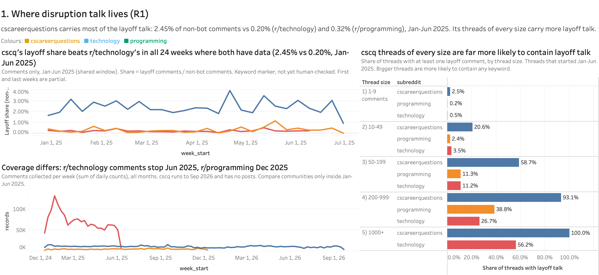
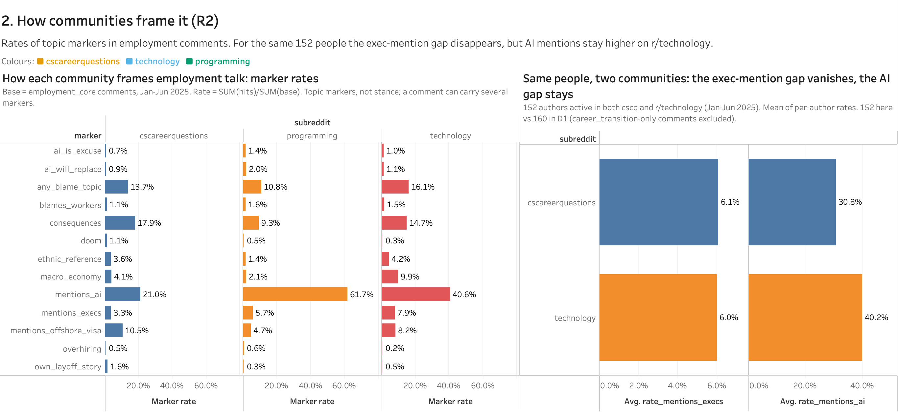
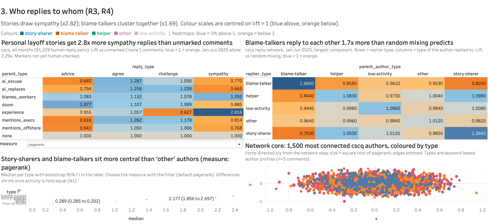
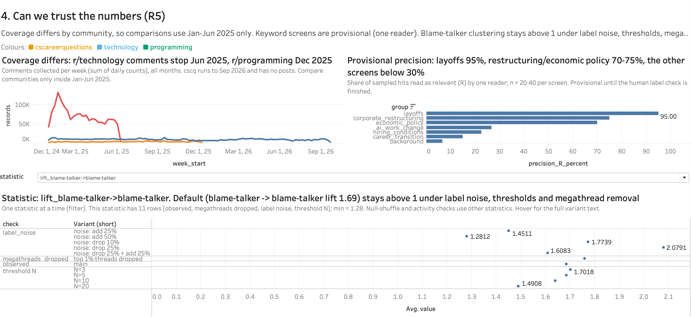
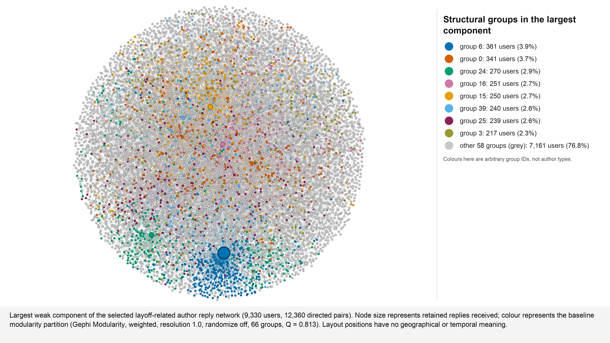
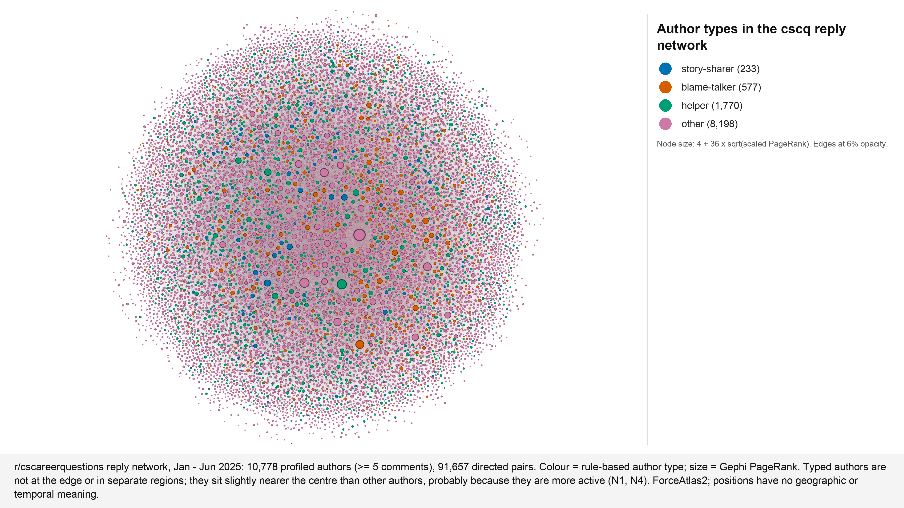
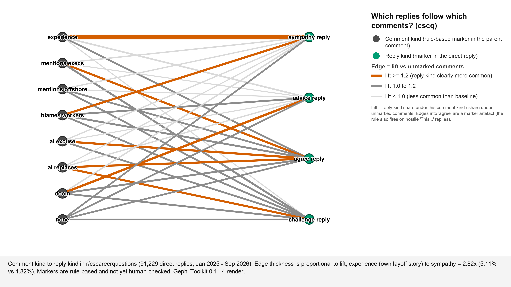
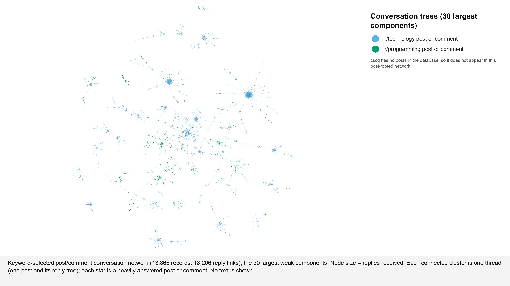

CSE3729 Computational Social Media Analysis, BMU, Semester 7, 2026. Project: "Solidarity or Blame: how Reddit communities discuss disruption in technology employment". Date: 27 November 2026 (presentation day).
How to use this handbook
This handbook explains the whole project for a team member who collected the data but has not used Tableau or Gephi. All paths are relative to the project root, the
Archive/folder (/Users/vaibhav/Study/Sem 7/Computational Social Media/Archive), unless they say otherwise.
If you want to... Read Understand what the project is, what changed, and what went wrong Part 1 Know how big the data is, how it was collected and where it lives Part 2 Understand the methods and defend every result Part 3 Open and present the Tableau workbook Part 4 Open and explain the Gephi networks Part 5 Set up, run things safely, prepare the talk, answer questions, look up a word Part 6 15-minute reading path for today's presentation:
- Part 1, section 1.1 (the project on one page) and 1.4 (what changed): about 3 minutes.
- Part 3, "Read this first: three ground rules" and section 3.5 (numbers to remember): about 3 minutes.
- Part 6, section 6.0 (safe-mode rule), 6.4.2 to 6.4.4 (talk plan, speakers, three claims) and 6.4.6 (limitations): about 4 minutes.
- Part 4, workflow 1 (presenting) and Part 5, section 5.3 (opening a project): about 3 minutes. Open the Tableau workbook and the Gephi projects once before the talk.
- Part 6, section 6.4.7 (likely questions): skim, about 2 minutes.
Three honesty rules that apply everywhere: (1) the 240-row human label check is not done, so results are "Supported", not "Findings", and all label precision is provisional (one reader: an AI-assisted first pass, not a human check); (2) no causal claims and no claims about the whole population of Reddit users; (3) the "agree" reply marker over-fires on replies starting with "This", so never say that blame draws agreement.
This part is the background you need before you open any tool. Read it first. It tells you what the project is about, what the course asked for, what happened when, how our thinking changed, and every problem we ran into, with how we handled it. Later parts explain Tableau, Gephi and the numbers in detail.
All paths are relative to the project root, the Archive folder (/Users/vaibhav/Study/Sem 7/Computational Social Media/Archive), unless they say otherwise. The older October folder is called Project/ and sits next to Archive/ in the subject folder.
Two words you will hear all day: - cscq is our short name for r/cscareerquestions, a Reddit community (a "subreddit") where people ask about computer-science careers and jobs. - A comment is a reply written under a Reddit post. A post (also called a submission) is the thing that starts a thread. Most of our data is comments.
Course. CSE3729 Computational Social Media Analysis, BMU, Semester 7 (2026). Faculty: Dr. Kiran Sharma and Dr. Jakob Baek Kristensen.
Title. Solidarity or Blame: how Reddit communities discuss disruption in technology employment.
The problem, in plain words. Technology work has been shaken up: layoffs, a hard hiring market, AI changing jobs, companies restructuring. People talk about this online. We wanted to know how they make sense of it together: - Do people share their own experience ("I was laid off last week")? - Whom do they blame: executives, offshoring, foreign workers, AI, or themselves? - How do others answer them: with comfort, advice, agreement or pushback?
Why it matters: solidarity versus blame.
- Solidarity here means support for the people affected: comfort, sympathy, help.
- Blame here means pointing at someone responsible: executives, offshoring, AI used "as an excuse".
- A community that answers a layoff story with comfort behaves very differently from one that turns it into an argument about who is at fault. That difference matters for moderators, career services and researchers (docs/PROJECT_REFERENCE.md, section 2).
Why it matters: sentiment is not stance. Most studies of online talk measure sentiment: is the text positive or negative? We measure what a comment does (tells a story, gives advice, blames someone) and how the community responds. This is called stance or function. The two are different. A sad layoff story and an angry rant about executives can both be "negative". A sentiment tool would lump solidarity and blame together. Our own test showed this: sentiment separates story comments from blame comments only at 0.50, which is chance level (outputs/17_sentiment_stance/SENTIMENT_STANCE_NOTES.md; docs/PROJECT_REFERENCE_2.md, layer 7).
The research questions (final report, deliverables/final/CSMA_Final_Report_Solidarity_or_Blame.pdf, section 1):
- RQ1. Where does employment-disruption talk live, and is it ambient or event-driven?
- RQ2. How do communities frame it: personal experience, evidence, explanations and targets of blame?
- RQ3. How do replies respond to stories, doom and blame, and how is the reply network structured?
(A wider list of five research questions is in docs/RESEARCH_DESIGN.md. H1 to H3 are the parts we actually tested.)
The hypotheses, in the documented wording from the midterm report and the final report:
| Name | Wording | |
|---|---|---|
| H1 | Community concentration | Employment-disruption language differs between r/cscareerquestions and r/technology in the same observation window. |
| H2 | Discourse function | Career discussion contains more worker-centred support and experience narratives; technology discussion has more news and industry framing. |
| H3 | Reply structure | Validated solidarity and blame labels are associated with different reply and engagement patterns. |
A hypothesis is a statement we expect to be true and then test with data.
Status of each hypothesis today:
| At the midterm (Oct) | Now (26 Nov) | |
|---|---|---|
| H1 | Preliminary support | Supported |
| H2 | Not tested | Supported, then narrowed (by the same-author test D1) |
| H3 | Not tested | Supported |
Important: "Supported", not "Finding". The project uses three claim labels (explained in 1.4). Nothing is a "Finding" yet, because the human check of our labels is not done. All label precision so far is provisional: one reader checked it, and that reader was an AI-assisted first pass (marked claude-provisional in the files), not a human coder. Say "the evidence suggests" or "supported", never "we found" or "we proved".
The one-sentence answer (from deliverables/final/CSMA_Final_Insights.md):
In r/cscareerquestions, solidarity follows disclosure, not a shared enemy: people who tell what happened to them get sympathy, while blame topics draw less support and no extra agreement, and who gets blamed comes with the person rather than the community.
The three core claims (the section "Three core claims" in deliverables/final/CSMA_Final_Insights.md, which is what you present today):
1. Layoff talk is concentrated in the career community (H1, Supported). 2.45% of non-bot cscq comments mention layoffs, against 0.20% in r/technology and 0.32% in r/programming (Jan-Jun 2025). Its weekly variability is low in cscq (0.21) and higher in r/technology (0.45): layoffs are ambient in cscq and event-driven in r/technology.
2. The communities frame disruption differently, and part of the gap follows the person (H2, Supported, then narrowed). Own layoff stories are 8.9% of layoff comments in cscq vs 3.1% in r/technology. But for the same ~152-160 authors who write in both, executive mentions are about equal (6.6% vs 5.8%) while AI talk still differs by +9.4 points.
3. Sympathy follows disclosure, not blame (H3, Supported). Personal layoff stories get sympathy in 5.11% of replies vs 1.82% for unmarked comments (x2.82, all cscq months). Blame topics draw less sympathy (x0.77-0.81) and no extra agreement.
A shorter "argument" version of the same story is in docs/PROJECT_REFERENCE_2.md, layer 7. It adds that blame-talkers argue among themselves in a more negative tone; that tone part comes from an AI sentiment model and is only a Lead.
Short key to the codes and terms used in this handbook:
| Term | Meaning |
|---|---|
| R1-R5 | The five result blocks of the report: R1 where disruption talk lives (H1), R2 how communities frame it (H2), R3 how replies respond (H3), R4 the reply network, R5 validity and robustness |
| D1-D4 | Four extra "directions": D1 same authors in two communities, D2 newcomers who get a reply and come back, D3 the H-1B announcement shock, D4 core vs periphery |
| N1-N5 | The network results inside R4 (for example N3: blame-talkers reply to each other more than chance) |
| Screen | A keyword rule that pulls out candidate comments about a topic (six employment screens, 177,808 candidates in total) |
| Marker | A keyword rule that tags what a comment does or mentions (own layoff story, doom, sympathy, advice, agree, challenge, mentions of executives...) |
| Precision | Of the comments a rule tags, the share that really are what the label says. Ours is provisional (one reader: an AI-assisted first pass) |
| Lift | How much more often something happens than in a baseline. Lift 2.82 = 2.82 times as often as after an unmarked comment |
| Checkpoint | A small file the collector writes to remember how far it got |
| Headless | Running a program without a screen or window (how the Gephi files were made) |
What we do not claim: that Reddit is a support community (about 95% of replies to stories are not sympathetic), polarisation, cause and effect, or anything beyond three subreddits and comments only.
The course requirements
The handout (Handout-CSMA-2026.pdf in the subject folder) sets the semester from 27 July to 28 November 2026. It is a project-based course: 80% is "experiential learning". The marks are:
| Component | Weight | When | What is assessed | What we had to hand in |
|---|---|---|---|---|
| A1 Project Phase Evaluation 1 | 20% | From the 1st week of September | Synopsis finalisation (5%); understanding of problem statement and objectives (10%); identification of data sources (5%). Criteria C1-C5: problem definition, objectives and outcomes, methodology, feasibility and resource planning, individual understanding | 1-2 page synopsis, project timeline, team responsibility matrix |
| A2 Project Phase Evaluation 2 | 20% | Mid-term exam week | Data collection and preprocessing (10%); data understanding (5%); preliminary analysis (5%). Criteria C6-C10: progress vs plan, technical understanding, problem solving, documentation, individual contribution | Updated synopsis, revised timeline, working prototype or code demo, 1-2 page progress report |
| Quiz | 20% | 3rd week of November | MCQ quiz on PrashaSetu over the whole syllabus | (individual) |
| A3 End-term evaluation | 40% | University calendar | Literature review (5%); work novelty (5%); full analysis and inference (15%); application / use case (5%); report writing (10%). Criteria C11-C15: final draft, technical depth, innovation/application, presentation and communication, individual contribution and learning | Final insights, source code repository, final report, final presentation and demo, group/self contribution matrix |
Where each A3 item lives in our project:
| A3 item | Our file |
|---|---|
| Final insights | deliverables/final/CSMA_Final_Insights.md (also .docx, .pdf) |
| Source code repository | scripts/, tests/, gephi/, tableau/, collection/; public GitHub repo lazinWolf/csma-layoff-sentiment (see problem 26 in 1.5) |
| Final report | deliverables/final/CSMA_Final_Report_Solidarity_or_Blame.pdf (12 pages) |
| Final presentation | deliverables/final/CSMA_Final_Presentation_Solidarity_or_Blame.pptx (16 slides) |
| Contribution matrix | deliverables/final/CSMA_Contribution_Matrix_DRAFT.docx (a draft for the team to confirm) |
| Application / use cases | Final report section 7; docs/PROJECT_REFERENCE.md, "Application / use cases" |
The tools
| Tool | What it is | How we used it |
|---|---|---|
| Python (3.12) | Programming language | Every step: cleaning, the database, screens, statistics, network analysis. Exact package versions are in requirements.txt (for example pandas 2.2.3, networkx 3.3, scikit-learn 1.5.1, torch 2.8.0, transformers 5.2.0) |
| Arctic Shift | A community-run archive of Reddit, with a public API (https://arctic-shift.photon-reddit.com/api). An API is a web address a program can ask for data |
Our collector downloaded posts and comments from it. Not Reddit's own API |
| SQLite | A database stored in one file | data/processed/reddit.sqlite (about 4 GB; 4.1 GB in Finder) holds all processed data |
| Tableau | Drag-and-drop software for charts and dashboards. Named in the handout | Workbook tableau/CSMA_Solidarity_or_Blame.twbx (11 sheets, 4 dashboards, 1 story) |
| Gephi | Software for drawing and measuring networks. Named in the handout | Four saved projects in gephi/projects/ and figures in gephi/figures/ |
The handout also names Zeeschuimer (a browser add-on for scraping). We did not use it. We used a custom Python collector against Arctic Shift instead, which Module 2 of the course allows ("custom Python-based scrapers").
The team and the documented roles
From docs/PROJECT_REFERENCE.md section 4 and deliverables/MIDTERM_HANDOFF.md:
| Member | Documented role |
|---|---|
| Vanshit Ahuja | Research framing, hypotheses, shared-window comparison, statistics, literature review, report and slides, QA |
| Vaibhav Jain | Reddit data collection (Arctic Shift), provenance, coverage checks |
| Tanya | Data cleaning, thread linkage, descriptive analysis, community comparison, figures |
| Krish | Lexical and stance baselines, reading sample, coding framework, NLP evaluation. Owns the stance labels |
| Dividh Vijay | All Gephi and network work: exports, edge direction, weights, scope, validation. Owns the reply-structure part of H3 |
What the records show about who produced what:
- The October midterm repository was committed by "vanshitahujaa".
- The public GitHub repo lazinWolf/csma-layoff-sentiment has 3 commits by "dividh" (25-26 Nov).
- The final-phase deliverables of 26 Nov were produced in a final build session on the project laptop with Claude Code: the Gephi projects and figures (via Gephi Toolkit, headless), the Tableau workbook, collection provenance, requirements.txt, the human-check kit, the docs refresh, the final report and slides, and the submission zips. For example, docs/PROJECT_REFERENCE.md task 5 records that the Gephi slide was "done 26 Nov in the final build session on the project laptop (Gephi Toolkit, with Claude Code), not by the assigned owner".
If you are asked who did what, use these records and the contribution matrix draft, and say the matrix is still a draft.
The lecture themes we leaned on
Three lecture themes shaped the method. The slides are in the subject folder.
| Theme | Lecture file | What it says | Where it shows in our project |
|---|---|---|---|
| Validity and reliability | can_you_trust_the_number.pptx (Kristensen) |
Reliability: would you get the same number again (for example, would two coders agree)? Validity: does the number measure what its name says? "Reliable is not the same as valid." | Our keyword labels are perfectly reliable (same input, same label) but not yet shown to be valid. That is why the 240-row human check exists |
| Operationalisation | from_question_to_measure_v2.pptx (Kristensen) |
Turning a question in words into something you can compute: name the construct and split it, choose the unit (comment, user, thread, week), find the trace. "Sentiment is a tool, not a finding" | We split "blame" into topic vs stance, and "support" into emotional (sympathy) vs informational (advice). We chose different units: comment (R1-R3), person (D1, R4) |
| Data narratives | Lecture - Data Narratives.pptx |
"From graphs to stories"; "Many points. One main message." | The Tableau story steps through four dashboards with one takeaway each, following this lecture (tableau/README.md) |
Two more course ideas appear: echo-chamber types (echo_chamber_types_minimal.pptx; our N3 result is "consistent with" Type 4, the affective or antagonistic echo chamber) and network measures (L2-NetworkMeasures.pptx: degree, components, giant component, which Gephi computes).
Dates come from the project docs, file timestamps and the provenance record. Times are IST unless marked UTC.
| When | What happened | Evidence |
|---|---|---|
| 27 Jul 2026 | Semester starts | Handout |
| Aug to early Sep | Synopsis for A1 (problem, objectives, data sources). The exact submission date is not recorded in the project files. The original synopsis made a cross-platform claim (Reddit plus other platforms) | Handout (A1 "from 1st week of September"); midterm report section 1 ("the cross-platform claim in the original synopsis") |
| Sep 2026 | Data-collection brief written. Its working title was "Solidarity or Blame? How Tech Layoffs Spark Support vs Polarization Across Platforms" | collection/Documents/CSMA_Tech_Layoffs_Agentic_Reddit_Data_Collection_Prompt.pdf ("Version: September 2026") |
| 21 Sep, 16:23 | Early pilot dataset written (titles only, keyword-filtered, 2023-2026). Not part of the main database | Project/data/processed/posts.csv; collection/PROVENANCE.md section 7 |
| 23 Sep (UTC) | Collector and config last edited (06:31-06:37 UTC). Run 1: r/technology posts and comments, cscq comments, r/programming posts and comments, 06:43 to 18:37 UTC | collection/PROVENANCE.md section 6 |
| 24 Sep (UTC) | Run 2, after an 18.6-hour gap: r/technology only, 13:14 to 20:42 UTC | Same |
| 25 Sep, 02:14 | Project/data/raw.zip made, two minutes after the last checkpoint |
Same |
| Early Oct | Data audit, preprocessing, SQLite database, flat tables, descriptive analysis, 5 figures. Six employment screens and a 200-record reading sample (labels blank) | docs/PROCESS_REPORT.md; outputs/01_profile to 05_sample |
| Oct | Gephi network exports: author network (14,507 users, 15,427 edges) and conversation network (13,866 nodes, 13,206 edges). The author network was explored in Gephi and its metrics export was verified in Python on 5 Oct | gephi/exports/; gephi/analysis/FINDINGS.md; docs/PROCESS_REPORT.md section 7 |
| 5 Oct | Midterm package finalised: report, 15-slide deck, H1 shared-window comparison (Jan-May 2025, 11.36x), lexical stance baseline. Directory cleanup | deliverables/, outputs/08_midterm/; docs/PROCESS_REPORT.md ("Status date: 5 October 2026") |
| 6 Oct | Midterm evaluation date printed on the report. Share zip share/csma-review.zip built (now stale) |
Midterm report cover; file timestamp |
| 14-15 Nov | Three exploration rounds: leads (09_leads), language (10_language), dynamics (11_dynamics). Then a plan titled "Stop exploring, answer the team's own question" |
Notes dated 15 Nov; docs/PROJECT_REFERENCE.md section 7; outputs/archive/PLAN_SOLIDARITY_OR_BLAME.md |
| 19 Nov | H3 reply analysis (12_replies). Interpretation routine written and applied (13_interpretation). Findings-by-hypothesis page (archived 25 Nov). Four directions D1-D4 (14_directions). Project tidy-up |
outputs/12_replies/REPLY_NOTES.md; docs/INTERPRETATION_ROUTINE.md; outputs/14_directions/DIRECTIONS_NOTES.md |
| 25 Nov | R4 author-type network (15_network). Tableau extracts (16_tableau, 15 CSVs). Layered reference docs/PROJECT_REFERENCE_2.md first written |
outputs/15_network/NETWORK_NOTES.md; outputs/16_tableau/TABLEAU_GUIDE.md |
| 25-26 Nov | Three commits by "dividh" to the public GitHub repo lazinWolf/csma-layoff-sentiment. The repo reflects the state of 26 Nov 03:15 |
Commit facts: the team's git record (not re-checked on this laptop). The 03:15 state: docs/PROJECT_REFERENCE_2.md ("Before committing or sharing") |
| 26 Nov (early) | Sentiment and zero-shot stance as an extra signal (17_sentiment_stance), commit 810dc19 |
outputs/17_sentiment_stance/SENTIMENT_STANCE_NOTES.md |
| 26 Nov (day) | Final build session: audit, backups (Archive.zip at 19:14), Gephi projects and figures, Tableau workbook, collection provenance, requirements.txt, human-check kit, docs refresh and changelog, final report, slides, insights and contribution matrix draft. raw.zip made at 18:48 |
docs/CHANGELOG_2026-11-26.md |
| 26 Nov, 22:29-22:45 | Tableau workbook opened and checked in Tableau Desktop 2026.3 (free edition); fixes followed | tableau/README.md |
| 26 Nov, 23:10-23:57 | Submission zips written: full zip (2.46 GB) at 23:10, team zip at 23:21, the two split parts at 23:57. Deadline 23:59 | File timestamps in the subject folder |
| 27 Nov | Final presentation | docs/PROJECT_REFERENCE.md section 1 |
Note: "09-14" in folder names are output folder numbers, not dates.
Where we started
outputs/archive/PLAN_SOLIDARITY_OR_BLAME.md) was even more specific: "blame is tolerated when it points up at employers and penalised when it points sideways at other workers". This guess did not survive (see the corrections below).The decisions we made, and why
| Decision | What it means | Why |
|---|---|---|
| Shared window | Compare communities only over months where all of them have data. The midterm used Jan-May 2025; the November analyses use Jan-Jun 2025 | r/technology comments stop on 9 Jun 2025. Comparing cscq in 2026 with r/technology in 2025 would mix up "the community is different" with "we have data for different times". Trends over time use cscq only |
| Non-bot denominator | A denominator is the number you divide by. We divide by all comments that are not from accounts flagged as likely bots | Bot accounts (found with a name-based flag, likely_bot) are not people discussing work, so they should not count in the total. Removing them moves the cscq layoff share from 2.33% to 2.45% (docs/PROJECT_REFERENCE_2.md, layer 1) |
| Interpretation routine with three labels | Every number goes through six steps (docs/INTERPRETATION_ROUTINE.md, written 19 Nov): say it as what people did; compare with what you expected; list rival explanations, including "boring" ones (R1-R8: the label is wrong, the denominator moved, a few threads drive it, coverage differs, timing, length, bots, an outside event); check the number each rival predicts; read 5-10 examples; name the concept |
Producing numbers is easy; turning one into a trustworthy claim is not. The routine stops us from over-claiming |
| The three labels | Lead: one number, no checks ("we observed... this may indicate"). Supported: survived the boring explanations plus one independent measure ("the evidence suggests"). Finding: three or more measures agree, examples fit, and labels checked by a human ("we find") | Because the human check is not done, nothing is a Finding. The best label we can use is Supported |
| Comments only | Results R3 and R4 describe comment-to-comment conversation | cscq has 0 posts in our data (problem 1 below) |
| No new collection | The team decided not to download more data | Recorded in collection/PROVENANCE.md and the README. Instead, every claim says "the collected corpus" and states the limit up front |
| Question first, no open-ended exploration | After three exploration rounds produced "a pile" of results without a question (mid-November), every analysis had to start from H1-H3 | outputs/archive/PLAN_SOLIDARITY_OR_BLAME.md |
The corrections (be ready to explain these; they show the routine working)
| Earlier claim | What the check showed | What we say now |
|---|---|---|
| "Blame draws agreement" (the first reading of the H3 reply table showed slightly more "agree" replies under blame topics, x1.0-1.5) | The "agree" reply marker also fires on any reply that starts with "This", including hostile ones. Half of all agree-marker hits start with "This", and the stance model reads only 30% of those as agreement. Read by the stance model (an off-the-shelf zero-shot AI model, not checked by a person), agreement under blame topics is flat (x0.92-1.19, every interval overlapping the baseline) | Blame topics draw less support and no extra agreement. Never say blame draws agreement. Correction dated 26 Nov in outputs/12_replies/REPLY_NOTES.md |
| "Blame sideways is penalised" | The "blame sideways" label (H-1B, offshoring, visas) was about 95% plain mentions, not blame. Only 7 of 70 offshoring mentions blamed foreign workers | The labels were renamed as topic labels (mentions_execs, mentions_offshore), not blame |
| The hiring ratio (midterm: hiring language 8.50% vs 0.45%, 18.69x) | The hiring screen's provisional precision is only about 22%: most matches are not really about hiring conditions | Do not quote it. Only the layoff screen (about 95%) carries headline numbers |
"AI as an excuse grew" (10_language/LANGUAGE_NOTES.md said it "more than doubled") |
AI talk as a whole roughly doubled. Per 1,000 AI comments, "AI is the excuse" stayed flat (18.0 to 19.3). The boring explanation (the denominator moved) won | "AI as an excuse" did not grow. AI became a bigger topic, as a working condition (tools, review), not a growing excuse story |
| H2 as a pure community difference | D1 compared the same ~152-160 authors who write in both cscq and r/technology. Their executive mentions are about equal (6.6% vs 5.8%), so the community gap disappears; their AI talk still differs by +9.4 points | H2 is Supported, then narrowed: who gets blamed comes with the person; topics are shaped by the community. (docs/PROJECT_REFERENCE_2.md labels D1 a Lead; the final report lists it as Supported. If asked, say the cross-poster group is small, so treat D1 carefully.) |
| "Helpers at the centre" (R4 expectation) | Once activity is matched, story-sharers are not on the edge and helpers are not hubs | N1: position follows activity, not role |
The table is long on purpose. A panel may ask about any of these. "Status" means the state on 26-27 Nov.
| # | Problem | What happened | Effect | How we handled it | Status |
|---|---|---|---|---|---|
| 1 | No cscq posts | 0 r/cscareerquestions posts were saved, in any month. No checkpoint file exists for that stream | 108,722 cscq replies to posts in Jan-Jun 2025 (about 40% of non-bot comments in that window; source outputs/15_network/NETWORK_NOTES.md) have nothing to point at. Layoff stories told as posts are invisible. Thread topics are unknown |
Use comments only; R3 and R4 describe comment-to-comment conversation. State the limit up front | Open (limit stated) |
| 2 | Uneven coverage | cscq comments run to 23 Sep 2026; r/technology comments stop on 9 Jun 2025; r/programming comments on 12 Dec 2025. Posts for both run to Sep 2026 | A trend over time could just be a coverage effect | Shared window (Jan-Jun 2025) for comparisons; trends in cscq only | Handled |
| 3 | Silent-stop collector bug | The collector cannot tell "no more data" from "the API failed". On an error it returns nothing, logs "No more ... found" and moves to the next stream, with exit code 0. No log file was configured | Streams ended early without anyone noticing. r/technology comments stopped twice at arbitrary dates | Documented in collection/PROVENANCE.md sections 6 and 11, with the fix we would make. The safe sentence: "the collector stops silently on API errors, or the run was interrupted; no logs were kept, so the exact cause cannot be confirmed" |
Open (documented, not fixed: no new collection) |
| 4 | Only 3 of 7 subreddits | The config listed technology, cscareerquestions, programming, ExperiencedDevs, antiwork, jobs, careerguidance. Nothing was saved for the last four | Narrower scope | Results are limited to three subreddits | Open (limit stated) |
| 5 | Collection settings undocumented until 26 Nov | The midterm report said "collection settings and completeness are unknown" | The panel could not see how the data was gathered | collection/ folder built on 26 Nov: exact copies of the October collector code, config and 5 checkpoints, plus PROVENANCE.md and the read-only verify_raw_timeline.py |
Done |
| 6 | Missing parent comments | Some comments reply to something we do not have (a post that was not saved, or a missing comment). 65.96% of comments link to a stored submission. In the October author network, 12,032 of 28,077 selected comments lacked their parent | Fewer reply links; some context lost | Missing parents are kept and marked, never invented. Among comment-to-comment replies, 99.33% have their parent | Handled |
| 7 | Bots | Some accounts are bots that post many times | They inflate totals | A name-based likely_bot flag; bots are left out of denominators (R1 moves from 2.33% to 2.45%) and out of the network |
Handled (the flag itself is unverified) |
| 8 | Deleted and removed text | 145,840 comments removed and 8,152 deleted; 2,705,044 (94.61%) usable | Some text unreadable | Text states marked explicitly; analyses use available text | Handled |
| 9 | Heavy tails | A few people write most comments: cscq authors with 5 or more comments (10,922) wrote 80% of comments (Jan-Jun 2025). The top 1% of users receive 17.8% of replies; 97% of pairs exchange one reply | Averages mislead; a few people can drive a result | Medians, activity matching, profiling only authors with 5+ comments | Handled |
| 10 | Mega-threads | A few huge threads hold many comments | One thread could make a month | Robustness check with mega-threads dropped; the blame-talker lift stays above 1 in every variant (minimum 1.28) | Handled |
| 11 | Score snapshots | Reddit scores are saved at download time and favour early comments. Medians are 1, but means are 655.2 (posts) and 13.61 (comments) | Vote analyses are biased | Within-thread percentiles, control for early arrival; scores not treated as exposure | Handled |
| 12 | Keyword labels not validated | Every label is a keyword rule. Precision was checked provisionally by one reader (an AI-assisted first pass, not a human check) | Nothing can be a Finding | Human-check kit built (problem 27). Results called Supported | Open |
| 13 | Topic is not stance | A rule that finds "offshoring" finds the topic, not blame | "Blame" numbers really count mentions | Renamed to topic labels; stance model used as a second view; final claims speak of "blame topics" | Handled in wording |
| 14 | The "agree" marker over-fires | It fires on replies starting with "This", including hostile ones | Agreement was overstated | "Blame draws agreement" dropped; stance model used for agreement | Handled |
| 15 | Hiring screen precision about 22% | Most hiring matches are not about hiring conditions | The midterm's 18.69x hiring ratio is unreliable | Not quoted anywhere. The other weak screens (AI/work 26.7%, career transition 15%) are not used for headline claims either | Handled |
| 16 | Mixed windows | The midterm used Jan-May 2025 (2.32%); November used Jan-Jun 2025 (2.45%); R3 uses all cscq months, Jan 2025-Sep 2026 | Numbers differ slightly between documents | Every number is quoted with its window. R3 also reported for Jan-Jun 2025 alone (4.42% vs 1.93%, x2.29, same direction) | Handled by labelling; "pick one window" was never formally decided |
| 17 | Polarisation not measurable | The stance model gives only 9-40 replies per target, and its "disagrees" label fires on 62% of replies, so it is unusable | We cannot measure polarisation, although the original brief was about it | We do not claim it; it is future work after human-checked stance labels | Open |
| 18 | Tableau never built until 26 Nov | Extracts existed from 25 Nov, but no workbook | Risk of no Tableau deliverable | Workbook generated by script (tableau/build_workbook.py), checked by tableau/validate_twb.py, with numbers in tableau/EXPECTED_VALUES.md |
Done |
| 19 | Tableau unlicensed | No paid licence | Could not activate a paid copy | Tableau Desktop 2026.3 free edition ("Use Tableau for free" on the activation screen) | Done |
| 20 | Tableau ignored our palette | The custom colours written into the file were ignored | Colour keys did not match | Keys changed to Tableau's default colours: cscq blue, programming orange, technology red. So they differ from the Gephi figures | Done |
| 21 | Cramped Tableau layouts | R2a was 36 cramped rows; dashboard 3 was crowded | Hard to read | R2a redrawn as one column per community; R4b moved out of dashboard 3 (it stays a worksheet); dashboard 4 titles shortened. If a "File Recovery" dialog appears after a force-quit, click Delete | Done |
| 22 | No saved Gephi project before 26 Nov | In October the author network was explored in Gephi and a metrics CSV exported, but no .gephi project of our networks was kept. (Gephi First Network.gephi in the subject folder is dated 7 Sep, before our data collection on 23-24 Sep; it was not inspected for this handbook) |
Nothing to open in a demo | Four projects built on 26 Nov in gephi/projects/ with the Gephi Toolkit 0.11.4, run headless, plus .gexf fallbacks |
Done |
| 23 | Gephi version and GUI test | Projects saved by toolkit 0.11.4; the app on the laptop is Gephi Desktop 0.11.3 | Opening the .gephi files in the desktop app is recorded as not tested in the GUI |
If a project will not open, use File > Open on the .gexf beside it (gephi/projects/analysis_notes.md section 7) |
Open (fallback ready) |
| 24 | Headless PNG export | "Headless" means running without a screen. Gephi's PNG exporter needs a screen and threw HeadlessException |
No direct PNGs | Exported as PDF from Gephi Preview, then turned into PNG (gephi/toolkit/pdf_to_png.py). Nothing was redrawn |
Done |
| 25 | ForceAtlas2 settings | ForceAtlas2 (FA2) is Gephi's layout algorithm. The README's starting point (scaling 100) spread the network so wide that the picture looked blank at slide size | Unusable figures | Strong gravity on and lower scaling (for example scaling 10, gravity 1 for the largest component). Note: Gephi's Modularity and FA2 are not bit-for-bit repeatable, so do not re-run them casually | Done |
| 26 | GitHub repo missing the 26 Nov evening work | lazinWolf/csma-layoff-sentiment reflects 26 Nov 03:15 |
It lacks the Gephi projects, the Tableau workbook, collection/, requirements.txt, the human-check kit and the doc updates |
The submission zips hold the complete project | Open |
| 27 | Human check not done | 240 rows (12 labels x 20) need two independent coders, or four coders splitting rows 1-120 and 121-240 | No inter-coder agreement; no Findings | Kit ready: docs/HUMAN_CHECK_GUIDE.md, annotations/human_check/check_sheet_coder_A-D.xlsx, scripts/score_human_check.py (writes to outputs/18_human_check/) |
Open: the main gap |
| 28 | Deadline pressure | Much final work happened on 26 Nov; the last zips were written at 23:57 for a 23:59 deadline | Some items were left open: the contribution matrix is a draft, the Gephi projects are untested in the GUI, and the GitHub repo is behind | Backups first (Archive.zip, _backup_before_final_2026-11-26/), a written changelog, and a fact-check pass on the report |
Done, with known gaps listed |
| 29 | Very large files | Database about 4 GB (4.1 GB in Finder); raw data about 6.2 GB in 29,821 JSON files; outputs/03_tables 586 MB; the full submission zip 2.46 GB |
Hard to share or upload | Split into Part 1 (code, docs, results, 216 MB) and Part 2 (data, 2.1 GB); raw data zipped as raw.zip (623 MB) |
Done |
Still open:
1. The human label check. This is the single most important open item. Until two coders have coded the 240 rows, every result stays "Supported", no inter-coder agreement exists, and all precision numbers are provisional (one reader: an AI-assisted first pass, not a human check).
2. The 200-record reading sample (annotations/reading_labels_employment.csv) promised at the midterm is still uncoded.
3. Coverage gaps stay, because the team decided not to collect more data.
4. Polarisation cannot be measured with the current labels.
5. Weak screens (hiring, AI/work, career transition) are not fixed.
6. One shared window (Jan-May vs Jan-Jun 2025) was never formally chosen; numbers carry their window instead.
7. Spikes not matched to events: the shared mid-May 2025 spike, cscq's top week of 21 April, and the second offshoring spike in mid-December 2025.
8. Gephi projects have not been opened in the Gephi Desktop GUI; the .gexf files are the fallback.
9. The GitHub repo lacks the 26 Nov additions, and the contribution matrix is a draft.
Next steps, in order (from deliverables/final/CSMA_Final_Insights.md and the final report):
1. Run the human check (two coders working alone), then score it with scripts/score_human_check.py. Only then upgrade labels to Findings, or revise them.
2. Join the validated stance labels to the reply networks to test the reply-structure part of H3 with human labels. Fine-tune a stance model only after that.
3. Replace or retire the weak screens; date the second offshoring spike.
4. Test D2 (newcomers who got a non-sympathy reply return 50% vs 39% with no reply) with a design that can separate cause from selection.
5. Measure polarisation once stance labels are validated.
6. Add topic modelling and external labour indicators only if a hypothesis needs them.
If someone asks "what would you do differently?", an honest short answer: log every API request during collection so a silent stop is visible, collect cscq posts first in small time windows, and do the two-coder label check before building the big analyses on top of it.
This part covers everything about the data itself: how big it is, how it was downloaded, how it was turned into a database, what the tables and columns mean, where each file lives, how to look at it yourself, and what it does not let us claim.
Unless a path starts with /, it is relative to the project root, Archive/ (full path: /Users/vaibhav/Study/Sem 7/Computational Social Media/Archive). "The subject folder" means its parent, /Users/vaibhav/Study/Sem 7/Computational Social Media.
Short names used throughout:
| Short name | Meaning |
|---|---|
| cscq | r/cscareerquestions |
| post (also called a submission) | The thing that starts a Reddit discussion: a title plus either text or a link |
| comment | A reply under a post, either to the post itself or to another comment |
| record | One post or one comment |
| thread | One post and all the comments under it |
| UTC | Universal time. All dates in the data are UTC; India (IST) is UTC + 5:30 |
| shared window | Jan–Jun 2025, the only stretch in which all three communities have comments (r/technology's comments end on 9 June) |
| JSON | A plain-text file format for structured data; the archive sends its answers as JSON |
| SQLite | A database kept in a single file; you query it with SQL, a language for asking questions of tables |
| denominator | The "out of how many" number in a percentage |
| R1-R5, H1-H3 | The report's five results and three hypotheses (see Part 1 and Part 3) |
All numbers in this part were checked on 27 Nov 2026 against the database (opened read-only) or against the documents named next to them.
| Community | Kind | Records | First record (UTC) | Last record (UTC) | Complete up to the collection date? |
|---|---|---|---|---|---|
| r/cscareerquestions | comments | 962,337 | 2025-01-01 | 2026-09-23 | Yes |
| r/cscareerquestions | posts | 0 | – | – | No, never saved |
| r/technology | comments | 1,657,900 | 2025-01-01 | 2025-06-09 | No, about 15 months short |
| r/technology | posts | 76,782 | 2025-01-01 | 2026-09-24 | Yes |
| r/programming | comments | 238,800 | 2025-01-01 | 2025-12-12 | No, about 9 months short |
| r/programming | posts | 38,431 | 2025-01-01 | 2026-09-23 | Yes |
| Total | 2,974,250 | 115,213 posts + 2,859,037 comments |
Source: database table records; the same table appears in docs/PROCESS_REPORT.md section 3 and collection/PROVENANCE.md section 5.
What to say in one sentence. "We have about 3 million Reddit records from three tech communities, January 2025 to September 2026, but coverage is uneven, so every comparison between communities uses January to June 2025."
Reddit replaces the text when a user deletes a comment ("deleted") or a moderator removes it ("removed"). The database keeps the record and labels its state in the text_state column.
| Text state | Comments | % of comments | Posts | % of posts |
|---|---|---|---|---|
| available (usable text) | 2,705,044 | 94.61% | 10,316 | 8.95% |
| removed (by moderators or Reddit) | 145,840 | 5.10% | 10,610 | 9.21% |
| deleted (by the author) | 8,152 | 0.29% | 536 | 0.47% |
| empty | 1 | 0.00% | 93,751 | 81.37% |
| Total | 2,859,037 | 100% | 115,213 | 100% |
Why so many posts are "empty". Most r/technology and r/programming posts are link posts: a title plus a link to a news article, with no body text. An empty body is normal for these and does not mean data is missing. Every post has a title.
By community, comment availability is 95.28% in cscq (42,313 removed), 93.58% in r/technology (102,089 removed) and 99.13% in r/programming (1,438 removed).
Comments per calendar month (UTC), from records. An asterisk marks a partial month where the stream stops; a dash means no data was collected.
| Month | cscq | r/technology | r/programming |
|---|---|---|---|
| 2025-01 | 60,088 | 433,959 | 18,435 |
| 2025-02 | 46,271 | 324,075 | 19,099 |
| 2025-03 | 48,401 | 321,478 | 18,490 |
| 2025-04 | 49,815 | 255,401 | 18,074 |
| 2025-05 | 51,922 | 258,846 | 22,498 |
| 2025-06 | 46,384 | 64,141 * (to 9 Jun) | 20,457 |
| 2025-07 | 53,931 | – | 22,915 |
| 2025-08 | 48,524 | – | 26,194 |
| 2025-09 | 49,284 | – | 23,223 |
| 2025-10 | 44,632 | – | 20,562 |
| 2025-11 | 37,619 | – | 21,265 |
| 2025-12 | 35,531 | – | 7,588 * (to 12 Dec) |
| 2026-01 | 36,664 | – | – |
| 2026-02 | 38,981 | – | – |
| 2026-03 | 54,831 | – | – |
| 2026-04 | 51,384 | – | – |
| 2026-05 | 47,063 | – | – |
| 2026-06 | 43,937 | – | – |
| 2026-07 | 38,534 | – | – |
| 2026-08 | 41,754 | – | – |
| 2026-09 | 36,787 * (to 23 Sep) | – | – |
| Total | 962,337 | 1,657,900 | 238,800 |
What to notice: - r/technology is by far the biggest per month (over 250,000 comments a month) but stops on 9 June 2025. - cscq is steady at roughly 35,000-60,000 a month for all 21 months. That is why trends over time use cscq only. - Posts (r/technology and r/programming only) run all 21 months: about 2,800-4,400 r/technology posts and 650-2,600 r/programming posts per month.
On macOS, Finder shows decimal units (1 GB = 1,000,000,000 bytes), while du -h in Terminal shows binary units (1 GiB = 1,073,741,824 bytes). That is why the same file can appear as "4.1 GB" in one place and "3.8G" in another. Exact byte counts are given where they matter.
| What | Where | Size |
|---|---|---|
| Raw JSON (29,821 files in 21 month folders) | ../raw/ (subject folder); identical copy in ../Project/data/raw/ |
6,163,721,355 bytes ≈ 6.16 GB (5.74 GiB) |
| Raw zipped for submission | ../raw.zip |
623,122,190 bytes ≈ 623 MB |
| Raw zipped straight after collection (25 Sep) | ../Project/data/raw.zip |
643,427,582 bytes ≈ 643 MB |
| Main database | data/processed/reddit.sqlite |
4,105,027,584 bytes ≈ 4.1 GB (3.8 GiB; some docs round to 3.9 GB) |
| Model scores database | data/processed/model_scores.sqlite |
54,419,456 bytes ≈ 54 MB (52 MiB) |
| Full-corpus CSV exports | outputs/03_tables/ |
586 MiB in total |
| … of which comments | outputs/03_tables/comments.csv.gz |
484,726,021 bytes ≈ 485 MB (462 MiB) |
| … reply edges / posts / threads / candidates | same folder | 93 MB / 19 MB / 12 MB / 4.6 MB |
| Tableau extracts (15 CSVs) | outputs/16_tableau/ |
41 MiB |
| Tableau packaged workbook | tableau/CSMA_Solidarity_or_Blame.twbx |
760,119 bytes ≈ 0.76 MB |
| Gephi CSV exports (October) | gephi/exports/ |
6.8 MiB |
| Whole Gephi folder (projects 42 MiB, figures 101 MiB, toolkit 84 MiB) | gephi/ |
252 MiB |
| Final submission zip | ../CSMA_Solidarity_or_Blame_Final_Submission.zip |
2,461,342,087 bytes ≈ 2.46 GB |
| … split, part 1 (code, docs, results) | ../CSMA_Submission_Part1_Project_Code_Docs_Results.zip |
226,228,094 bytes ≈ 226 MB (216 MiB) |
| … split, part 2 (data) | ../CSMA_Submission_Part2_Data.zip |
2,235,114,015 bytes ≈ 2.24 GB (2.1 GiB) |
Team zip (adds team_extras/) |
../CSMA_Solidarity_or_Blame_Team_Full_Project.zip |
2,474,077,767 bytes ≈ 2.47 GB |
The authoritative account is collection/PROVENANCE.md. Read it if you are asked a detailed question. This section is the short version.
Arctic Shift (https://arctic-shift.photon-reddit.com/api) is a community-run archive of Reddit: it stores copies of posts and comments and lets researchers search them by subreddit and date. It is not run by Reddit. Two of its "endpoints" (web addresses that answer queries) were used:
posts/search returns posts;comments/search returns comments.Each request asks for "up to 100 items from subreddit X, created after time A and before time B, oldest first". The collector then moves A forward to the newest item it received and asks again. This is called paging. It repeats until the archive returns nothing.
The code is in collection/src/collector.py; settings are in collection/config/collection_config.yaml. Both are unchanged copies of the October Project/ folder, checked byte for byte.
| Setting | Value |
|---|---|
| Parameters sent | subreddit, after, before (Unix seconds), limit, sort |
limit |
100 items per request |
sort |
asc (oldest first, so after can move forward) |
| Date range | 2025-01-01 to 2026-12-31 |
| Delay / retries | 0.1 s between requests, 5 retries with back-off |
| Subreddits configured | 7: technology, cscareerquestions, programming, ExperiencedDevs, antiwork, jobs, careerguidance |
| Subreddits actually collected | 3: technology, cscareerquestions, programming |
| Keyword filter at collection | None. Everything posted in the window was downloaded |
| Output | One JSON file per page: raw/YYYY-MM/<posts or comments>_batch_<save time in ms>.json |
| Checkpoints | checkpoints/<type>_<subreddit>_checkpoint.json, holding the newest timestamp fetched so far |
Important: the config file also lists 23 layoff keywords, but the collector never uses them. Only the small pilot (below) used them. Keyword screening of the main data was done afterwards, in the analysis pipeline. That is why our denominators are "all collected comments", not "keyword hits".
Of the 29,821 raw files, 29,665 hold exactly 100 items; the rest are short remainders. 0 JSON parse errors and 0 duplicate records were found (outputs/01_profile/profile.json).
Reconstructed from the save times inside the file names (PROVENANCE.md section 6). Times are UTC.
| When | What happened |
|---|---|
| 23 Sep 06:31-06:37 | Collector code and config last edited |
| 23 Sep 06:43-07:46 | Run 1: r/technology posts |
| 23 Sep 07:46-10:30 | r/technology comments, stopping early at content date 2025-02-01 |
| 23 Sep 10:31-15:29 | cscq comments (complete, to 2026-09-23). No cscq posts step is visible |
| 23 Sep 15:29-17:09 | r/programming posts |
| 23 Sep 17:09-18:37 | r/programming comments, ending at content date 2025-12-12. Nothing is saved for the other four subreddits |
| 18.6-hour gap | |
| 24 Sep 13:14-20:42 | Run 2: r/technology only. The last post files, then comments resume exactly where run 1 stopped (2025-02-01) and run up to 2025-06-09 |
| 24 Sep 20:44 (25 Sep 02:14 IST) | Project/data/raw.zip created, two minutes after the last checkpoint write |
The final checkpoints (in collection/checkpoints/) agree with the newest content in the raw files: cscq comments 2026-09-23, r/technology comments 2025-06-09, r/programming comments 2025-12-12, r/technology posts 2026-09-24, r/programming posts 2026-09-23. There is no checkpoint for cscq posts.
The collector cannot tell "no more data" from "the API failed". If Arctic Shift returns an error, or the retries run out, the code treats it as "finished": it logs "No more ... found", moves on to the next stream and exits normally. No log file was configured, so the screen output is gone.
So the cause is one of two things: 1. this silent-stop path, for example Arctic Shift timing out on a large request; or 2. an interrupted run (a closed terminal, a sleeping Mac). The 18.6-hour gap and a zip made two minutes after the last write fit a manual stop.
No logs were kept, so we cannot say which. What is certain is that the data stops where the checkpoints say. For cscq posts, the first posts/search request apparently returned nothing usable, so the loop went straight to cscq comments. In a presentation, say: "Some streams stopped early, either because the collector stops silently on an API error or because the run was interrupted; no logs were kept, so we can't say which. We documented the gaps and designed the comparisons around them."
If asked "why not re-collect?": the team decided not to download more data for the final submission (collection/README.md, docs/PROJECT_REFERENCE_2.md layer 0).
posts.csv (not part of the corpus)Before the main run there was a small pilot: Project/data/processed/posts.csv and comments.csv (written 21 Sep 2026; QA report in collection/reports/QA_REPORT.md).
reddit.sqlite, and its raw files are no longer on the laptop. No result depends on it. Treat it as a smoke test and do not quote its numbers as part of our data.Full instructions: collection/README.md (read first) and collection/docs/RUNBOOK.md (the original instructions).
collection/. The scripts work out their paths from their own location, so running there would overwrite the shipped checkpoints and reports. Copy the folder somewhere else first, for example to a temporary folder.requests, pyyaml, pandas.CSMA_SALT environment variable (only the pilot's privacy step uses it).python main.py --mode smoke first: a tiny test (one batch of 10 posts and 10 comments).python main.py --mode collect for the full collection. With the shipped checkpoints it resumes where the original run ended (r/technology comments from 2025-06-09, r/programming comments from 2025-12-12). Delete the copied checkpoints/*.json to start from scratch.data/raw/YYYY-MM/ inside the copy. The analysis pipeline expects these month folders at Archive/raw/.To re-check the existing raw data without downloading anything, run the read-only script collection/verify_raw_timeline.py with the path of the raw folder (about 50 seconds). It reprints the timeline table.
The pipeline is a chain of Python scripts in scripts/, run in order by scripts/run_pipeline.py. Each stage reads what the previous one built. The main stages were built on 3-4 Oct 2026 (table research_builds: features and conversations on 3 Oct, the employment sample on 4 Oct; the screen on 4 Oct per screening_builds).
| # | Stage name | Script(s) | What it does | Main output |
|---|---|---|---|---|
| 1 | profile |
profile_data.py |
Reads every raw JSON file, counts records per month, community and kind, checks for duplicates and broken files, and builds the SQLite index (records table). Never changes the raw files |
outputs/01_profile/, reddit.sqlite |
| 2 | preprocess |
preprocess_data.py |
Cleans text, makes author pseudonyms and the bot flag (features), and rebuilds the conversation structure (threads, reply_edges) |
reddit.sqlite, outputs/02_preprocessing/ |
| 3 | screen |
screen_disruption.py (rules in disruption_rules.py) |
Runs the six employment screens over all 2,974,250 records and stores matches with evidence (disruption_screen) |
outputs/03_tables/disruption_candidates.csv.gz, monthly counts |
| 4 | tables |
export_tables.py |
Writes flat CSV copies of posts, comments, threads and reply edges | outputs/03_tables/ |
| 5 | analysis |
summarize_data.py, preliminary_analysis.py |
Descriptive statistics: coverage, engagement, vocabulary, thread sizes, reply quality | outputs/04_analysis/ |
| 6 | plots (optional) |
plot_eda.py |
Five static descriptive figures (needs Matplotlib) | outputs/04_analysis/figures/ |
| 7 | sample |
sample_data.py |
Draws the 200-record employment reading sample with its context | outputs/05_sample/employment/ |
| 8 | gephi |
gephi/scripts/export_gephi.py |
Exports node and edge CSVs for Gephi (October author and conversation networks) | gephi/exports/ |
| 9 | annotations (optional) |
summarize_annotations.py |
Counts whatever labels the label file contains; it never assigns labels itself | outputs/07_annotations/ |
A default run (python scripts/run_pipeline.py) does all stages except plots and annotations. It reuses the existing database instead of rebuilding it. Rebuilding from scratch needs the raw folder at Archive/raw/ and profile_data.py --rebuild.
The later analysis scripts (explore_leads.py to explore_network.py, score_text_models.py, export_tableau.py and others) are not pipeline stages. Each one only reads the database and writes to its own outputs/NN_*/ folder. They are covered in other parts of this handbook.
Real usernames are never stored in the database. Each known username is lowercased and turned into a code:
author_key = "u_" + the first 24 hexadecimal characters of SHA-256(username in lowercase)
(scripts/research_common.py). SHA-256 is a one-way scrambling function: the same name always gives the same code, so we can follow one person across comments without knowing who they are. Deleted or unknown authors get an empty key (NULL), and the author_unknown flag is 1. They are not merged into one fake "deleted user".
| Comments | Posts | |
|---|---|---|
| Distinct author keys | 465,864 | 38,144 |
| Records with unknown author | 153,993 | 3,297 |
There are 496,880 distinct author keys overall.
likely_bot)A simple name rule: the account is AutoModerator, or its name ends in "bot". The flag is not a verified bot check, and flagged records are not deleted. Analyses choose to leave them out of denominators. 53,915 comments carry the flag: 47,967 in cscq, 5,176 in r/technology and 772 in r/programming. Only 30 posts carry it. It matters: taking flagged comments out of the denominator moves the R1 cscq layoff share from 2.33% to 2.45% (docs/PROJECT_REFERENCE_2.md, layer 1).
own_text versus quoted textOn Reddit, people quote others by starting a line with >. Preprocessing splits each body three ways:
| Column | Contents |
|---|---|
clean_text |
Whole body, HTML codes decoded (e.g. & becomes &), extra spaces collapsed. Case, punctuation, emojis, slang and links are kept |
quoted_text |
Only the lines that start with > |
own_text |
The body without those quoted lines: the author's own words |
The screens and the reply markers (the keyword rules used later to tag what a comment or reply does, such as telling one's own story or offering sympathy) read own_text, so a comment is not counted as "talking about layoffs" just because it quotes someone who did. 92,702 comments contain quoted lines. This is a formatting rule, so quotes written without > are not caught.
Each comment stores two pointers. link_id (t3_...) names the post at the root of its thread. parent_id names what it directly replies to: either the post (t3_...) or another comment (t1_...). From these, preprocessing builds:
reply_edges: one row per comment (2,859,037), saying who it replies to, whether that parent is in our data (parent_present), both author keys, the time gap (reply_delay_seconds), and the depth.depth_status = missing_parent).threads: 164,271 rows, one per thread root, with collected comment count, distinct authors, top-level count, maximum depth and missing-parent counts. Thread roots exist even when the post itself was not collected. All 46,403 cscq threads have post_present = 0.Parent availability:
| Parent is a… | Parent present | Parent missing |
|---|---|---|
| comment | 1,823,984 (99.33%) | 12,312 |
| post | 627,856 | 394,885 (mostly cscq, which has no posts) |
The missing cscq posts matter for the network. In Jan-Jun 2025, 116,662 of the 288,266 non-bot cscq comments (40.5%) reply directly to a post. They have no parent author, so they drop out of the reply graph. PROJECT_REFERENCE_2.md layer 0 gives this as 108,722 replies, about 40% of human comments, presumably counted on a slightly different filter.
A screen is a keyword rule (a "regular expression", a text-search pattern) that pulls out candidate records. It does not prove a record is relevant. The rules are in scripts/disruption_rules.py, version employment-screen-v1, run over all 2,974,250 records. They read the title and own_text separately, with links removed.
Five of the six facets are contextual: the topic words count only if an employment anchor (a word such as job, hiring, layoff, salary, engineer, developer or worker) appears in the same title or body.
| Facet | What kinds of words it catches (paraphrased) | Needs anchor? | Candidate records |
|---|---|---|---|
layoffs |
Layoff/laid off/lay off, job cuts, workforce reduction, reduction in force, downsizing, furlough | No | 28,326 |
hiring_conditions |
Hiring freeze or slowdown, job search/hunt/market/offers, unemployment, recruiting, interviews, résumés, "hiring" | Yes | 90,004 |
ai_work_change |
"AI", artificial intelligence, generative AI, ChatGPT, LLMs, automation | Yes | 58,658 |
corporate_restructuring |
Restructuring, reorganisation, mergers, acquisitions, return to office (RTO), offshoring, outsourcing | Yes | 11,396 |
economic_policy |
Recession, economy, interest rates, inflation, tariffs, immigration, visas, H-1B, labour market | Yes | 18,792 |
career_transition |
Changing or switching careers, reskilling, upskilling, retraining, leaving tech, quitting, resigning | Yes | 14,315 |
Together they retrieve 177,808 candidate records (173,473 comments and 4,335 posts). The facets overlap: one comment can match several, so the facet counts add up to more than 177,808. Never add them together.
Two known weaknesses:
- Hiring: the hiring screen's provisional precision is only about 22% (one reader's check: an AI-assisted first pass), so its numbers are not quoted. The layoffs screen read at about 95%.
- Career transition: its "quit…" pattern also matches the word "quite". It is therefore left out of the "employment core" used in H3 (outputs/16_tableau/TABLEAU_GUIDE.md).
All precision figures are provisional, from one reader, because the 240-row human check has not been done.
Facet hits by community and kind (overlapping):
| Community, kind | layoffs | hiring | AI | restructuring | econ/policy | career | Any |
|---|---|---|---|---|---|---|---|
| cscq comments | 23,443 | 78,966 | 40,268 | 9,279 | 13,867 | 11,279 | 140,618 |
| r/technology comments | 3,386 | 7,480 | 9,437 | 1,455 | 4,044 | 2,073 | 23,408 |
| r/programming comments | 803 | 2,700 | 5,695 | 563 | 754 | 831 | 9,447 |
| r/technology posts | 642 | 436 | 1,872 | 69 | 90 | 45 | 2,607 |
| r/programming posts | 52 | 422 | 1,386 | 30 | 37 | 87 | 1,728 |
These are raw counts. The communities differ hugely in size and coverage, so compare shares within the shared window, never raw counts.
The October layoff flags (direct_layoff, broad_layoff in records) are older and narrower: direct matches 28,077 comments and 654 posts; broad matches 30,549 comments and 767 posts. They were kept, not replaced.
Full reference: docs/DATA_DICTIONARY.md. Records are identified by the pair (kind, id), because a post and a comment could in principle share an id.
reddit.sqlite, with row counts| Object | Type | Rows | What it is |
|---|---|---|---|
records |
table | 2,974,250 | One row per post or comment as collected: ids, community, dates, title, original text, text state, score, links, layoff flags, source file |
features |
table | 2,974,250 | Prepared fields for the same records: author key, unknown/bot flags, clean_text, own_text, quoted_text, URLs, word and character counts |
posts |
view | 115,213 | records joined to features, posts only |
comments |
view | 2,859,037 | records joined to features, comments only |
threads |
table | 164,271 | One row per thread root with size, author and depth summaries |
reply_edges |
table | 2,859,037 | One row per comment: its parent, both author keys, delay, depth |
author_reply_edges |
view | 1,988,998 | Author → author reply counts (self-replies, unknown authors and missing parents excluded) |
disruption_screen |
table | 177,808 | Only records matching at least one screen: six 0/1 facet flags plus evidence_json (which words matched, in which field) |
reading_sample_employment |
table | 200 | Which records are in the current reading sample, and why |
reading_sample |
table | 200 | The older layoff sample's membership (kept for a Gephi scope) |
research_builds |
table | 4 | When each preparation stage finished |
screening_builds |
table | 1 | Screen version, rule fingerprint, records scanned (2,974,250) |
feature_files |
table | 29,821 | Bookkeeping: which raw files were processed |
A view is a saved query that looks like a table. Use comments and posts for most work: they already contain the cleaned text and author fields.
| Column | Where | Meaning |
|---|---|---|
kind, id |
most tables | posts or comments, plus the Reddit id. Always join on both |
subreddit |
records | cscareerquestions, technology or programming |
created_utc, created_month |
records | Creation time in Unix seconds; month as YYYY-MM (UTC) |
text_state |
records | available / removed / deleted / empty |
text, title |
records | Original body; post title |
own_text, quoted_text, clean_text |
features | See 2.3 |
author_key, author_unknown, likely_bot |
features | Pseudonym; unknown flag; name-based bot flag |
score, num_comments |
records | Upvote score and Reddit's reported comment count at download time (snapshots, not final values) |
link_id, parent_id |
records | Thread root (t3_…) and direct parent (t1_… or t3_…) |
direct_layoff, broad_layoff |
records | The October layoff keyword flags (0/1) |
source_file |
records | Which raw JSON file the record came from |
layoffs … career_transition |
disruption_screen | The six screen flags (0/1) |
parent_present, same_thread, depth, depth_status, reply_delay_seconds |
reply_edges | Linkage and depth (see 2.3) |
collected_comment_count, distinct_known_authors, max_resolved_depth |
threads | Thread size and shape |
model_scores.sqlite is separate. It holds the cached outputs of off-the-shelf models, not human labels: sentiment (300,946 rows: VADER and RoBERTa scores), stance (470,533) and reply_stance (488,166), both zero-shot stance probabilities, plus meta. Each row is keyed by comment id. These are an extra signal only; nobody has checked them against human labels.
Computational Social Media/ (the subject folder)
├── raw/ 29,821 raw JSON batches, 2025-01 … 2026-09 (NOT inside Archive)
├── raw.zip raw/ zipped for submission (623 MB)
├── Project/ October folder: original collector, data/raw/ copy, pilot posts.csv
├── CSMA_*.zip submission and team zips (see 2.1)
└── Archive/ the project root
├── collection/ collector code, config, checkpoints, PROVENANCE.md, verify_raw_timeline.py
├── data/processed/
│ ├── reddit.sqlite main database (4.1 GB); -shm/-wal are SQLite side files, leave them alone
│ └── model_scores.sqlite cached model scores (54 MB)
├── outputs/
│ ├── 01_profile/ raw-file audit (profile.json, files.csv, monthly.csv …)
│ ├── 02_preprocessing/ audit.csv, build_summary.json, screening_manifest.json
│ ├── 03_tables/ posts/comments/reply_edges .csv.gz, threads.csv, disruption_candidates.csv.gz, manifests
│ ├── 04_analysis/ descriptive tables and five EDA figures
│ ├── 05_sample/employment/ 200-record reading sample + context packet (JSONL)
│ ├── 09_leads/ … 17_sentiment_stance/ read-only analyses (other parts of this handbook)
│ └── 16_tableau/ 15 CSV extracts + TABLEAU_GUIDE.md
├── annotations/
│ ├── reading_labels_employment.csv working reading labels for the sample
│ └── human_check/ coder workbooks A-D (.xlsx + .csv) for the 240-row check (not yet filled)
├── gephi/exports/ October node/edge CSVs with manifest.json
├── tableau/ the .twbx workbook and its builder
├── scripts/ pipeline and analysis scripts
└── docs/ DATA_DICTIONARY.md, METHODOLOGY.md, RUNNING.md, explore.sql …
Note: docs/RUNNING.md mentions .cache/ (stage logs) and .venv-eda/ (a plotting environment), but neither exists in the current Archive/ folder. Create a fresh virtual environment from requirements.txt if you need one.
Golden rule: open the database read-only in "immutable" mode. A normal open may create or change the reddit.sqlite-shm and -wal side files. Immutable mode tells SQLite that the file will not change, so it writes nothing.
sqlite3 command-line toolcd "/Users/vaibhav/Study/Sem 7/Computational Social Media/Archive". The quotes are needed because of the spaces.sqlite3 -readonly 'file:data/processed/reddit.sqlite?immutable=1'.sqlite> prompt. Type .headers on and .mode column so the results look like a table..tables to list tables and views. Type a query ending in ; and press Enter..quit to leave.Tested on this laptop with sqlite3 3.45.3; the side files were unchanged afterwards.
If it goes wrong:
- "unable to open database": you are not in the Archive folder. Repeat step 2.
- A query seems frozen: full-table queries over 2.9 million comments take 10-30 seconds. Wait.
import sqlite3, urllib.parse
path = "data/processed/reddit.sqlite"
con = sqlite3.connect("file:" + urllib.parse.quote(path) + "?immutable=1", uri=True)
print(con.execute("SELECT COUNT(*) FROM comments").fetchone())
urllib.parse.quote handles the spaces in the full path. With pandas, pd.read_sql_query(sql, con) returns a table.
None of these prints text or author keys. Keep it that way when you show results to anyone.
Q1. How many records per community and kind, and over which dates? Reproduces the table in 2.1.
SELECT subreddit, kind, COUNT(*) AS records,
date(MIN(created_utc),'unixepoch') AS first_day,
date(MAX(created_utc),'unixepoch') AS last_day
FROM records GROUP BY subreddit, kind;
Q2. What is the monthly layoff share in cscq? This is layoffs-screen hits divided by non-bot comments.
SELECT c.created_month AS month, COUNT(*) AS comments,
SUM(COALESCE(d.layoffs,0)) AS layoff_hits,
ROUND(100.0*SUM(COALESCE(d.layoffs,0))/(COUNT(*)-SUM(c.likely_bot)),2) AS layoff_pct
FROM comments c
LEFT JOIN disruption_screen d ON d.kind=c.kind AND d.id=c.id
WHERE c.subreddit='cscareerquestions'
GROUP BY c.created_month ORDER BY c.created_month;
What you will see: 21 rows with shares between about 1.9% and 3.3% (for example 2.36% in 2025-01 and 3.25% in 2026-05). Change the WHERE to c.created_month BETWEEN '2025-01' AND '2025-06' and group by c.subreddit instead of month. You then get the R1 numbers exactly: 2.45% cscq, 0.20% r/technology, 0.32% r/programming. These are screen-hit shares, a description of the corpus, not a result on their own.
Q3. Which threads are biggest?
SELECT subreddit, collected_comment_count, distinct_known_authors, max_resolved_depth
FROM threads ORDER BY collected_comment_count DESC LIMIT 10;
What you will see: the top threads are all r/technology. The largest has 8,732 collected comments from 4,929 distinct authors. (The thread_id column is left out on purpose: it is a real Reddit id.)
Q4. How many screen hits per facet, per community? Reproduces the facet table in 2.3.
SELECT r.subreddit, r.kind,
SUM(d.layoffs) AS layoffs, SUM(d.hiring_conditions) AS hiring,
SUM(d.ai_work_change) AS ai, SUM(d.corporate_restructuring) AS restructuring,
SUM(d.economic_policy) AS econ_policy, SUM(d.career_transition) AS career,
COUNT(*) AS any_facet
FROM disruption_screen d JOIN records r ON r.kind=d.kind AND r.id=d.id
GROUP BY r.subreddit, r.kind;
Q5. How much text is usable in each community?
SELECT subreddit, kind, text_state, COUNT(*) AS n
FROM records GROUP BY subreddit, kind, text_state ORDER BY subreddit, kind, n DESC;
More ready-made queries: docs/explore.sql and docs/research_queries.sql. Some of them print text and titles, so do not paste their output into slides.
| File(s) | Rows | Opens in Excel? |
|---|---|---|
outputs/16_tableau/*.csv (15 files) |
7 to about 173,000 each | Yes: double-click, or Excel → File → Open |
outputs/03_tables/threads.csv |
164,271 | Yes |
outputs/03_tables/posts.csv.gz |
115,213 | Yes, after unzipping (double-click in Finder to unpack the .gz) |
outputs/03_tables/comments.csv.gz, reply_edges.csv.gz |
2,859,037 | No. Excel stops at 1,048,576 rows. Use SQLite or pandas (pd.read_csv(..., chunksize=100_000)) |
Tips:
- The Tableau extracts are the friendliest. They contain no comment text, usernames, Reddit ids or author hashes; authors and threads have neutral ids. Column meanings are in outputs/16_tableau/TABLEAU_GUIDE.md.
- Timestamps such as created_utc are Unix seconds. In Excel, =A2/86400+DATE(1970,1,1) turns one into a date (format the cell as a date).
- If accented characters look garbled, use Data → From Text/CSV and choose UTF-8. Menu names vary between Excel versions.
- Never save over a project CSV from Excel. Use "Save As" into your own folder.
| We can say | We cannot say |
|---|---|
| "In the collected corpus…" | Anything about "all of Reddit" or "all tech workers" (no population claims) |
| Comparisons between communities in the shared window, Jan-Jun 2025 | Comparisons over the full 21 months, because coverage differs |
| Trends over time in cscq (comments only) | Trends in r/technology after 9 Jun 2025 or r/programming after 12 Dec 2025 |
| Patterns among comments and replies | Anything about cscq posts. Layoff stories told as a post are invisible to us |
| That two things go together | That one causes the other (no causal claims) |
| Screen and marker counts with their provisional precision | That screen hits are confirmed experiences or themes. All labels are rule-based or model-based, and the 240-row human check is not done. Results are "Supported", not "Findings" |
Other coverage limits:
- Scores and reported comment counts are snapshots from download day.
- Removed and deleted comments (5.4% of all comments) have no text.
- Only 3 of the 7 configured subreddits were collected.
- The connection to Arctic Shift had certificate checking turned off (verify=False). The data was checked internally (0 duplicates, 0 parse errors) but not against a second source (PROVENANCE.md section 10).
- The screens are English keyword rules: they miss indirect wording and catch unrelated uses.
author_key is an unsalted hash. Anyone with a list of usernames could hash them and match the keys.PROVENANCE.md section 9 records that the project owner said privacy is out of scope for the submission, so nothing was changed. State this limit if asked.p…, t…, a…, n…) that cannot be reversed. Prefer them for anything you show.model_scores.sqlite) were computed locally. Per scripts/score_text_models.py, no text left the machine.One-line summary for a viva: "Three subreddits, about 3 million records, collected from the Arctic Shift archive with no keyword filter. Some streams stopped early (a silent-stop collector or an interrupted run; no logs, so unconfirmed), so we documented the gaps and compare communities only in Jan-Jun 2025. The data is stored in a 4 GB SQLite database with pseudonymous authors, cleaned own-text and rebuilt reply chains, and screened afterwards by six keyword rules whose precision is still provisional."
This part explains how each number in the report and slides was produced, what it means, and how far you can trust it. Every path is relative to the project root (Archive/). If someone asks "where does that number come from?", find the result card below. It names the script, the output folder and the figure to show.
Read this first: three ground rules for presenting today
claude-provisional in the files. It is not human coding.A naming clash to know about. The project uses "R" for two different lists: - Results R1–R5 are the five report sections (R1 where the talk lives, R2 framing, R3 replies, R4 network, R5 validity). - Rivals R1–R8 are the eight "boring explanations" in the interpretation routine (label, denominator, a few threads, coverage, timing, length, bots, outside event).
This part always writes "result R3" or "rival R3" to keep them apart.
Every analysis counts comments that carry some label. There are three kinds, and they differ in what they can be trusted for.
| Kind | What it is | Example | Made by | Trust it for |
|---|---|---|---|---|
| Screen | A broad keyword search that finds candidate comments about employment. A match is a retrieval aid, not a theme. | Six screens: layoffs, hiring conditions, AI and work, restructuring, economic policy, career transition. Together they retrieve 177,808 candidates. | scripts/screen_disruption.py, stored in the disruption_screen table |
Finding the right comments. Only the layoffs screen (about 95%) is precise enough to quote counts. |
| Marker | A narrower rule (a regex, a text pattern) that says what a comment does or talks about. | experience (telling your own layoff story), mentions_execs, mentions_offshore, ai_excuse, blames_workers (a noisy topic label about workers' skill or effort), ai_replaces, doom; and for replies: sympathy, advice, agree, challenge |
The dict M in scripts/explore_leads.py; mapped to labels in scripts/explore_replies.py (PARENT, REPLY) |
Comparisons between groups. Each has its own known weakness (see section 3.3). |
| Model label | The output of an off-the-shelf machine learning model, never trained or checked on our data | VADER and RoBERTa sentiment; zero-shot stance (DeBERTa) such as "blames executives" | scripts/score_text_models.py, cached in data/processed/model_scores.sqlite |
An extra signal only. Every model-based result is at most a Lead. |
Topic vs stance. Most markers detect a topic (what is mentioned), not a stance (what the writer thinks). A comment that names a CEO is not necessarily blaming the CEO. Only experience describes an act, telling your own story. Keep this in mind whenever the word "blame" appears: "blame-topic comments" means comments that mention executives, offshoring or AI as an excuse.
thread_boot() in scripts/explore_replies.py (1,000 re-samples); the reply CIs are in outputs/12_replies/reply_table.csv.Compare the same person in two places. If r/technology mentions executives more than cscq, that could be because the place changes how people talk, or because different people post there. Taking only the authors who post in both communities and comparing each with themselves removes the "different people" explanation. This is how D1 works (160 cross-posters).
Coverage differs by community: r/technology comments stop on 9 Jun 2025, r/programming comments on 12 Dec 2025, and cscq comments run to 23 Sep 2026. To compare communities fairly, comparisons use only the months all three cover: Jan–Jun 2025. June is partial for r/technology (its comments end on 9 Jun). The midterm used Jan–May 2025 and counted bots in the denominator. Its cscq rate (2.32%) differs from the final 2.45% mostly because of the denominator: with bots included, Jan–Jun 2025 gives about 2.33%, and removing bots gives 2.45%. Trends over time use cscq only.
A null model is a "what if it were random?" version of the network. You shuffle the data in a controlled way many times and see what values you get by chance. A z-score says how many standard deviations the real value is from the shuffled average; z above about 3 means it is very unlikely to be chance.
Two nulls were used in result R4 (outputs/15_network/null_models.csv):
| Null | What it keeps fixed | What it tests | Blame-talker → blame-talker lift 1.69 |
|---|---|---|---|
| Degree-preserving (200 "stub shuffles") | How many replies each person gives and receives | Is the pattern more than "active people meet active people"? | null 1.00, z = 27 |
| Within-thread | Which threads each person is in; replies shuffled only inside threads | Is the pattern more than "they happen to be in the same threads"? | null 1.46, z = 8 |
Report the within-thread null. It is the stricter test. It shows that about two-thirds of the excess comes from sharing threads, and the rest from choosing each other inside threads.
There are three Q values on three different graphs. They are not comparable:
| Q | Graph | Nodes | Tool |
|---|---|---|---|
| 0.813 (66 groups) | October keyword-selected author network, largest component | 9,330 users | Gephi |
| 0.43 (59 groups) | Result R4: full cscq reply graph, largest component, Jan–Jun 2025 | 30,976 authors | networkx Louvain |
| 0.2723 (81 classes) | Result R4: profiled authors only (5+ comments) | 10,778 authors | Gephi |
The October graph is sparse and tree-like, so it splits into many tight pieces (high Q). The R4 profiled core is a dense, well-mixed block (low Q).
k-means is a clustering method (also on the syllabus): it puts people into k groups so that people in a group have similar feature values. Here the features were an author's activity, content rates and reply-giving rates. The silhouette score picks k: it measures how well separated the clusters are. ARI and NMI measure how well two groupings match: about 0 means no match and 1 means identical. A Ward dendrogram (hierarchical clustering) was a second check.
Centrality says how "important" a node is in a network. All four were computed in scripts/explore_network.py.
| Measure | Plain meaning | Note |
|---|---|---|
| Degree | How many people you reply to (out-degree) or get replies from (in-degree) | Exact |
| PageRank | You are important if important people reply to you | Scaled so that 1 = average |
| Betweenness | How often you sit on the shortest path between two others (a "bridge") | Estimated from 1,000 sampled starting points |
| Closeness | How few steps you are from everyone else | Estimated from 2,000 sampled sources (harmonic) |
docs/INTERPRETATION_ROUTINE.md)Every result went through six steps before it was written up:
| Rival | Boring explanation | Typical check |
|---|---|---|
| R1 | The label doesn't measure what its name says | Read 20 matches and count the hits |
| R2 | The denominator moved | Divide by the parent topic |
| R3 | A few threads or users drive it | Drop the megathreads; count distinct threads |
| R4 | Coverage differs | Use the shared window |
| R5 | Timing and position (early comments get votes) | Within-thread percentiles |
| R6 | Length (long comments match more) | Repeat within a word-count band |
| R7 | Bots and promotion | Distinct authors; bot flag |
| R8 | An outside event | Daily counts matched to dated events |
| Label | Means | Allowed wording |
|---|---|---|
| Lead | One number, no checks yet | "we observed…; this may indicate…" |
| Supported | Survived the boring rivals, and one independent measure agrees | "the evidence suggests…" |
| Finding | 3+ independent measures converge, examples fit, labels human-checked | "we find…" (nothing qualifies yet) |
Each card uses the same nine rows. Paths are relative to Archive/.
| Question | Is talk about layoffs concentrated in the career community, and is it steady or bursty? |
| Answer | Jan–Jun 2025, share of non-bot comments that match the layoffs screen: 2.45% in cscq, 0.20% in r/technology, 0.32% in r/programming. Inside threads that mention layoffs at all: 4.06% vs 0.49% (cscq vs r/technology). 67% vs 21% of large threads (50+ comments) contain layoff talk (17.8% in r/programming). Weekly variability (CV) is 0.21 / 0.45 / 0.76 (cscq / r/technology / r/programming); peak week divided by median week is 1.6 / 2.4 / 4.7. The midterm (Jan–May 2025) gave 2.32% vs 0.20%, ×11.36. |
| How computed | Layoff screen from scripts/screen_disruption.py. Thread spread from scripts/check_interpretations.py → outputs/13_interpretation/C1_h1_thread_spread.csv. Daily and weekly series from scripts/export_tableau.py → outputs/16_tableau/r1_daily_by_community.csv, r1_threads.csv. Midterm ratio: outputs/08_midterm/comparison_summary.json. The CV figures are recorded in docs/PROJECT_REFERENCE_2.md (layer 4) and outputs/archive/PROJECT_REFERENCE_2_by_result.md. The script that computed them is not identified in scripts/, and neither is the generator of the midterm JSON. |
| Show | Tableau dashboard 1 "Where disruption talk lives" (sheets R1a weekly layoff share, R1b threads with layoff talk, R5a coverage). Optional October EDA figure: outputs/04_analysis/figures/03_direct_layoff_shares.png. It shows the whole collected corpus over each community's own period (2.48% / 0.35% / 0.21% of comments), not the shared window, so don't put it next to the 2.45% headline without saying so. |
| How to read | R1a: one line per community over weeks (cscq blue, programming orange, technology red). cscq's line sits far above the others. Steadiness is a relative idea: on a shared axis a 0.2% line can look flat, so make the steady-vs-spiky point with the CV numbers rather than the eye. (This description is from the sheet definition in tableau/README.md; the view was not re-checked for this handbook.) R1b: bars by thread size; in cscq, most big threads contain layoff talk. CV (coefficient of variation) = standard deviation ÷ mean of the weekly rate: low means steady, high means spiky. |
| Rivals checked | Rival R2 (denominator: r/technology is huge and mostly about other news) → the rate inside layoff threads is still 8× higher. Rival R3 (a few threads) → the 10 busiest threads hold 8.6% of cscq's layoff comments vs 19.8% (technology) and 40.7% (programming). Rival R1 (label) → layoffs screen about 95% precise (provisional). Rival R4 → shared window. Rival R7 → bots removed from the denominator (this moves cscq from 2.33% to 2.45%). |
| Caveats | Comments only; no cscq posts. The hiring screen's ratio (×18.69 at the midterm) is unreliable (precision about 22%): never quote it. Mid-May 2025 and 21 Apr 2025 spikes are not matched to events. Midterm and final windows differ (Jan–May vs Jan–Jun). |
| Claim label | Supported |
| Say it | "In the career subreddit, layoffs are part of everyday conversation, about 2.5% of comments and steady week to week; in r/technology they are rare news that comes in bursts." |
| Question | Does cscq talk about disruption as personal experience, and r/technology as news and industry? Is the difference the place or the people? |
| Answer | Own layoff stories are 8.9% of cscq layoff comments vs 3.1% in r/technology (Jan–Jun 2025). Evidence cultures differ: cscq links labour statistics (FRED from 124 different people, BLS from 110); r/technology links news sites; r/programming links GitHub and studies and talks about the craft. Distinctive words: cscq = job search (resume, recruiter, yoe); r/technology = politics (DEI, government, tariffs); r/programming = code and tools. D1: for the 160 authors with 2+ employment comments in both communities, executive mentions are 6.6% (r/technology) vs 5.8% (cscq), a difference of +0.8 points (CI −1.7 to 3.2): the gap disappears. Their AI talk still differs by +9.4 points (CI 2.7 to 15.3). Across all authors the executive gap is 7.8% vs 3.3%. |
| How computed | Own stories: scripts/explore_leads.py → outputs/09_leads/lead2_proximity/first_person_vs_other.csv. Vocabulary: scripts/explore_language.py → outputs/10_language/A_communities/. Links: scripts/explore_dynamics.py → outputs/11_dynamics/H_sources/. D1: scripts/explore_directions.py → outputs/14_directions/D1_same_author_two_rooms.csv. |
| Show | Tableau dashboard 2 "How communities frame it" (R2a marker rates by community; R2b same authors in two communities). outputs/10_language/figures/A_communities_distinctive_terms.png. D1 has a table only. |
| How to read | R2a: one column per community, a bar per marker; compare bar heights across columns. R2b: two panes (executive mentions, AI mentions), one bar per community, 152 cross-posters. In the executive pane the two bars are nearly equal; in the AI pane they are not. The vocabulary figure lists each community's most over-used words (a "Fightin' Words" z-score, explained in card L). |
| Rivals checked | Rival "selection" (different people post in each place) was tested directly by D1. Rival R1 → the experience marker was 39/40 on layoff comments (provisional). Rival R4 → shared window. Four independent measures agree (stories, framing words, vocabulary, linked sources). |
| Caveats | The cross-posters are a small, unusual group: they mention executives and offshoring more than average in both places. 152 vs 160: the Tableau and stance versions use 152 because they leave out career-transition-only comments (152-author executive figures: 6.1% vs 6.0%). These are mentions, not blame. The source documents disagree on D1's label: outputs/14_directions/DIRECTIONS_NOTES.md says Supported, docs/PROJECT_REFERENCE_2.md says Lead. Use Lead (the stricter one). The final report (section 5.5) also lists D1 as Supported. If asked, say: "The report lists it as Supported; we treat it cautiously, as a Lead, because the cross-poster group is small (152-160 people)." |
| Claim label | R2: Supported, then narrowed. D1: Lead. |
| Say it | "cscq tells stories and cites labour statistics; r/technology cites news. But when we follow the same people across both, their talk about executives is the same: who brings up executives travels with the person, while how much AI gets discussed depends on the community." |
| Question | In cscq, does what a comment does (telling a story, mentioning blame topics, doom) change how people reply? |
| Answer | Own layoff stories get sympathy in 5.11% of replies vs 1.82% for unmarked comments (×2.82, CI 3.85–6.42%). All cscq months: 91,229 reply pairs under 134,749 employment comments in 18,817 threads. Jan–Jun 2025 alone: 4.42% vs 1.93% (×2.29). Stories get less pushback (×0.63) and no extra advice (×0.96). Doom draws advice (×1.38). Blame-topic comments draw less sympathy (×0.77–0.81) and less advice (×0.62–0.64), and no extra agreement: the stance model gives ×0.92–1.19, every CI overlapping the baseline. |
| How computed | scripts/explore_replies.py → outputs/12_replies/ (reply_table.csv, parent_summary.csv). The stance re-check: scripts/explore_sentiment_stance.py → outputs/17_sentiment_stance/T3_reply_stance.csv. |
| Show | gephi/figures/type_network_lift_slide.png (12 nodes, 32 edges, weight = lift). Tableau sheet R3, a heatmap on dashboard 3. |
| How to read | Gephi figure: comment kinds on the left, reply kinds on the right; edge thickness = lift. Vermillion edges have lift ≥ 1.2, mid-grey 1.0–1.2, light grey below 1. The thickest is experience → sympathy (2.82). Say aloud: the thick edges into "agree" are a marker artefact, because the agree rule fires on any reply starting with "This", including hostile ones. Tableau R3: a heatmap of comment kind × reply kind, with the lift as the label; blue = more than expected, orange = less, centred on 1. The blames_workers → sympathy edge (1.29) is vermillion too, but its CI (1.46–3.31%) overlaps the 1.82% baseline, so don't make a point of it. The "agree" column carries the same artefact warning. |
| Rivals checked | "Stories are just requests for help" → advice does not rise (×0.96). Rival R6 (length) → holds for comments of 30–150 words (×2.67). Rival R3 (thread clustering) → thread-clustered CI. "Negativity, not the story, draws sympathy" → ruled out by the sentiment check S2 (same lift at equal parent sentiment; see card S). Votes point the same way (card L). |
| Caveats | Reply markers are not checked by a person. The experience marker is about 11/20 correct on all employment comments; noise pulls a lift toward 1, so the true effect is probably larger. Never say "blame draws agreement", and don't say "debate" either: the model's disagreement label is unusable. Comment-to-comment replies only (no posts). Window is all months, not the shared window. |
| Claim label | Supported |
| Say it | "When someone says 'I was laid off', replies are almost three times as likely to comfort them. Comments about executives, offshoring or AI as an excuse get less comfort and no extra agreement. Solidarity follows disclosure, not a shared enemy." |
| Question | After someone shares their first layoff story, are they more likely to come back if they get a reply? |
| Answer | 1,170 cscq authors followed for 90 days. Newcomers (0 prior comments) who got a reply without sympathy came back 50% of the time (n = 102) vs 39% with no reply (n = 223). Only 12 newcomers got a sympathy reply: too few to say anything. Regulars (6+ prior comments) return 93–95% whatever happens. |
| How computed | scripts/explore_directions.py → outputs/14_directions/D2_sympathy_and_return.csv |
| Show | Table only (no figure). |
| How to read | Read along the "0 prior" rows: returned_within_90d_pct by what the first story got. |
| Rivals checked | Prior activity: split into activity bands. The sympathy marker catches "good luck" goodbyes to people in acute distress. Leaving may be a good outcome (found a job). |
| Caveats | Small groups, wide CIs. Not causal. Never say sympathy drives people away. |
| Claim label | Lead |
| Say it | "For newcomers, being answered at all seems to matter: half come back after a reply, against about four in ten with none. It's a lead, not a cause." |
| Question | Did the H-1B announcement of 19 Sep 2025 change how cscq talks about offshoring for good? |
| Answer | Offshoring, H-1B or visa talk went from about 13% of cscq employment comments in the 8 weeks before to 43% (42.9%) in the week of the announcement, then 13.5% the next week, then mostly 5–9% in weeks 3–12, below its earlier level (weeks 6–7 were 12–15%, about the earlier level; the notes' "5–9%" slightly overstates the drop). Framing did not change: about 4% of offshoring comments also mentioned executives in both periods. |
| How computed | scripts/explore_directions.py → outputs/14_directions/D3_h1b_shock_weekly.csv; daily counts outputs/09_leads/lead4_offshore/cscq_daily_h1b.csv |
| Show | outputs/09_leads/figures/lead4_daily_h1b.png (daily) and the weekly table D3_h1b_shock_weekly.csv |
| How to read | The figure is a daily bar chart of H-1B mentions per 1,000 cscq comments, Aug–Oct 2025. It is not the weekly offshoring share. Bars are low through August and early September. The tallest bar (about 100 per 1,000) is right after the 19 Sep proclamation, with another tall bar near 28 Sep, and October is low again. In the weekly table, week 0 is the announcement week. |
| Rivals checked | "A lasting shift toward blaming foreign workers" vs "a news shock that changes volume, not content". The share of offshoring comments with an ethnic reference was 16% in the spike week vs about 20% before, so content did not shift. |
| Caveats | Rough markers (rival R1). A second spike in week 13 (mid-December 2025, 24%) is not yet matched to an event. |
| Claim label | Supported |
| Say it | "In the week of the H-1B announcement, offshoring talk was about three times its usual share (43% vs about 13%), then it fell below where it started. The volume changed around the event; the framing did not. It is a timing pattern, not a proven cause." |
| Question | Do people who share layoff stories sit at the edge of the community (new), and blame-topic talkers at the core (regulars)? |
| Answer | Barely. Story comments come from slightly more newcomers (17.9% with no comments in the previous 180 days, vs 13.2% for unmarked comments) and slightly fewer regulars (21.0% vs 26.2%). Median prior activity is 9–14 comments for every kind. Story-sharers and blame-topic talkers are different people with the same tenure. |
| How computed | scripts/explore_directions.py → outputs/14_directions/D4_core_periphery.csv; the "different people" point from outputs/12_replies/author_roles.csv (2,392 authors mention offshoring but never share a layoff; 306 do the reverse; 352 do both). |
| Show | Table only. |
| How to read | Compare newcomer_pct_0_prior and regular_pct_50plus_prior across comment kinds: they are close. |
| Rivals checked | None are recorded in the notes. The groups are large (about 1,000–13,000 comments per kind, 119,056 unmarked), so small samples are not the issue. |
| Caveats | Tenure is counted only inside the corpus (from Jan 2025), so some "newcomers" are long-time members. |
| Claim label | No difference (counts as a result) |
| Say it | "Storytellers and people who keep raising blame topics are different people, but not because one group is new and the other old." |
| Question | Did more people start saying "AI is just the excuse for layoffs"? |
| Answer | No. Per 1,000 AI-related comments, the excuse rate was 18.0 (2025 H1), 20.6 (2025 H2), 19.3 (2026 H1) and 12.2 (2026 H2). Meanwhile AI's share of candidate comments rose from 20% to 38%. The rise per 10,000 comments (×2.5 in outputs/10_language/LANGUAGE_NOTES.md) is a denominator effect: AI talk overall doubled, so the excuse count rose with it. "AI will replace you" talk fell per 1,000 AI comments (35.2, then about 22, then 15.8). |
| How computed | scripts/check_interpretations.py → outputs/13_interpretation/C3_ai_excuse_vs_ai_talk.csv |
| Show | The table. Context figure: outputs/09_leads/figures/lead3_cscq_ai_themes.png (four lines per 1,000 cscq comments by month: AI + replacement/layoffs, AI tools named, mandates/usage tracking, AI in hiring). It shows AI tool talk rising sharply from early 2026. It does not plot the excuse rate. |
| How to read | In the table, look at the excuse_per_1000_ai column: flat, then lower, while ai_share_pct roughly doubles. |
| Rivals checked | This card is rival R2 (denominator moved) winning, which corrected an earlier note. |
| Caveats | 2026 H2 covers only part of the half-year. Marker-based. |
| Claim label | Supported (as a correction) |
| Say it | "It looked as if 'AI is just an excuse' was spreading, but all AI talk doubled; as a share of AI talk, the excuse claim did not grow." |
| Question | Could a sentiment score have done the job? And do stance models confirm the marker results? |
| Answer | S1: sentiment cannot tell a story from blame. RoBERTa reads 55% of story comments as negative, the same as executive or offshoring comments. The chance that a random story comment is more negative than a random blame-topic comment is 0.50 (RoBERTa) and 0.52 (VADER), where 0.5 is a coin flip. S2: within this model run (Jan–Jun 2025), the story → sympathy lift is ×2.35 overall and ×2.33 when parents have the same sentiment, so negativity does not explain it. S3: replies between blame-talkers are negative 50.1% of the time vs 39.7% between other typed authors, and the gap holds at equal parent sentiment (7–14 points). T2: across all authors r/technology blames more (e.g. blames executives 1.6% vs 0.7%), but within the same 152 authors every gap's CI includes zero. T3: the agree marker is half wrong: of agree hits starting with "This", the model reads only 30% as agreement, vs 82% of the other hits (4,597 of 9,219 hits start with "This"). |
| How computed | scripts/score_text_models.py (GPU, 41 minutes, cached in data/processed/model_scores.sqlite), then scripts/explore_sentiment_stance.py → outputs/17_sentiment_stance/ (S1–S3, T1–T3 CSVs). |
| Show | Tables only. |
| How to read | Compare groups, not absolute levels. The blame model is conservative: only 7.9% of executive mentions are read as blame. |
| Rivals checked | "Blame-talkers' parents are just more negative" → the gap holds within each parent-sentiment band. "Blame-talkers are negative with everyone" → partly (45.5%), but the inside-group cell is the most negative. |
| Caveats | Off-the-shelf models, not trained or checked on our data. Usable: blames_execs, ai_is_excuse, reply agrees. Not usable: blames_offshore (recall 0.14) and reply disagrees (fires on 62% of all replies). Model results are never human coding. |
| Claim label | Lead (every model-based result) |
| Say it | "A sentiment score would lump stories and blame together: both are equally negative. That's why we measured what comments do, not how they sound." |
Scope. cscq author reply graph, Jan–Jun 2025. An edge runs from the person replying to the author they replied to. Bots, deleted authors and self-replies are excluded. 108,722 replies to posts were dropped because there are no cscq posts. Largest connected component: 30,976 authors (97%), 162,024 replies. The graph is sparse (density 0.00014). Reciprocity is 0.44, the median degree is 2, the top 1% of authors hold 20% of ties, and the average path is about 4.3 steps. Script: scripts/explore_network.py → outputs/15_network/.
Author types (rules, applied in this order, to authors with 5+ comments):
| Type | Rule | n |
|---|---|---|
| story-sharer | ≥2 employment comments; ≥1 own layoff; layoff stories ≥ blame-topic comments | 233 |
| blame-talker | ≥2 employment comments; ≥2 mention executives, offshoring or AI-as-excuse, and these are ≥25% of their comments | 577 |
| helper | ≥5 replies given; ≥11% contain advice or sympathy | 1,770 |
| other | 5+ comments, none of the above | 8,198 |
| low-activity | under 5 comments | 20,198 |
The helper cut-off was planned at 30%, but that would keep only 191 people, so it was set at the upper quartile (11%) before looking at any result. "Blame-talker" means talks about blame topics, not stance.
| N1 | N2 | N3 | N4 | N5 | |
|---|---|---|---|---|---|
| Question | Are helpers central and story-sharers on the edge? | Does sympathy flow to story-sharers? | Do blame-talkers form their own group? | Do network communities line up with types? | Do the types appear without rules? |
| Answer | No: position follows activity, not role. Before matching, story-sharers and blame-talkers look central (median PageRank 2.2–2.4 vs 1.0). After matching each with an "other" author of the same activity, the story-sharer gap vanishes (PageRank difference −0.06, CI −0.27 to 0.15). Small gaps remain: blame-talkers +0.18 (CI 0.03 to 0.27), helpers +0.11, and helpers give slightly more than they get. No type is a hub or on the edge. | Story-sharers get 1.6–1.9× more sympathy, whoever replies: helpers' replies are 6.5% sympathy to story-sharers vs 4.2% to others; "other" authors' replies 1.7% vs 0.9%. | Yes. They reply to each other 1.69× chance (z = 8, within-thread null). Challenge-marker replies are 7.2% inside the group vs 4.5% overall; agreement is not up (5.7%). | No. Louvain: 59 communities, Q = 0.43, but the type mix in each is almost the overall mix (NMI ≈ 0.005, ARI 0.0001). | Partly. k = 4: story-tellers (151), executive-talkers (329), AI-as-excuse talkers (70), everyone else (4,477). No helper cluster. ARI with rules 0.14. |
| Files | rivals.csv, fig_centrality_by_type.png |
rivals.csv, null_models.csv |
null_models.csv, mixing_matrix.csv, fig_mixing_lift.png |
communities.csv, bipartite_check.csv |
kmeans_*.csv, fig_kmeans_profiles.png, fig_dendrogram.png |
| Rivals | Activity (types need 2+ employment comments, which selects active people) → activity matching and activity bands | Circularity (helpers are defined by sympathy) → compare within the helper row; thread co-location → within-thread null; label noise; megathreads dropped (6.8% vs 4.3%) | Thread co-location → within-thread null; megathreads dropped (1.76); label noise (1.28–2.08); threshold N = 3–20 (1.49–1.70) | Louvain resolution; a bipartite author–thread check gives a different structure again (ARI 0.002) | Silhouette picked k = 2 (any markers vs none); the rule fixed in advance said to then use the best k from 3 to 8 |
| Label | Supported (no difference) | Lead | Supported; tone part (S3) a Lead | Supported (no difference) | Lead |
Show: gephi/figures/r4_author_types_slide.png (colour = type: story-sharer blue, blame-talker vermillion, helper green, other pink; size = PageRank), gephi/figures/r4_modularity_slide.png (colour = Gephi class; the colours are arbitrary group IDs, not types), outputs/15_network/fig_mixing_lift.png, and Tableau dashboard 3 (R4a mixing heatmap, R4c network core map; R4b centrality is a separate worksheet). Careful: Tableau's colours differ from Gephi's. In Tableau, blame-talker is blue, helper orange, other red and story-sharer teal.
How to read the figures:
- Author-type map: coloured nodes are mixed through the whole picture, not in separate corners. They sit slightly nearer the centre because they are more active.
- fig_mixing_lift.png: three heatmaps. Rows = the replier's type; columns = the type of the author replied to. Orange = above 1, blue = below 1. Left panel: lift over random mixing; the hot cell is blame-talker → blame-talker (1.69). Middle panel: sympathy share of the cell ÷ overall. The helper row is orange everywhere because helpers are defined partly by sympathy, so compare along a row: helper → story-sharer is the highest (3.89). Right panel: challenge share ÷ overall; blame-talker → blame-talker is 1.60.
Caveats: - Comments only, so people who posted their story as a post are invisible (probably the most peripheral story-sharers). - Don't report the story-sharer → story-sharer lift (1.35): it fails the within-thread null (z = 0.9). - Q has no null comparison. - N3 shows topic homophily, not a shared opinion. Don't call the challenge replies "debate" and don't say blame-talkers agree with each other.
Say it: "In cscq, where you sit in the reply network depends on how much you post, not your role. But roles shape who answers whom: storytellers get more comfort, and the people who keep raising blame topics reply to each other 1.7 times more than chance, with more challenges and no more agreement."
| Question | What does the reply network around layoff-matching comments look like? |
| Answer | 14,507 users, 15,427 directed pairs (weight 15,977), average degree 1.0634. 2,199 weak components; the largest holds 9,330 users (64.31%); 1,771 components are just two users. Strong components: 12,951, largest 1,210. Modularity (weighted, resolution 1.0, randomize off): Q = 0.813, 66 groups, largest 361 (3.87%); 83.0% of replies stay within a group. Resolution 0.5 → 113 groups; 1.5 → 49. Attention is concentrated: top 1% of users get 17.8% of replies; only 446 of 15,427 pairs exchange more than one reply (97% exchange one). |
| How computed | October export gephi/exports/authors_keyword-comments_direct/, rebuilt on 26 Nov with Gephi Toolkit 0.11.4 (headless) via gephi/toolkit/run.sh and GephiRun.java. Stats in gephi/stats/ (e.g. authors_modularity_runs.csv). Concentration numbers from gephi/analysis/FINDINGS.md. Notes: gephi/projects/analysis_notes.md. |
| Show | gephi/figures/largest_component_communities_slide.png; project gephi/projects/author_replies.gephi, workspace "Largest weak component (9,330 users)". Optional: gephi/figures/conversation_largest_components_slide.png (13,866 records, 13,206 links; r/technology and r/programming only). |
| How to read | Colour = modularity group: the 8 largest have fixed colours and the other 58 are grey. Node size = replies received. The big blue node at the bottom is one user who got 300 replies from 296 people. Positions mean nothing geographically. |
| Rivals checked | Every count matches the October baseline. networkx gives Q = 0.8115 on the same partition. The resolution sensitivity runs keep Q near 0.81. |
| Caveats | A different scope from R4 (keyword-selected, mixed communities), so its Q is not comparable with R4's. The groups are reply clusters, not topics or identities. The modularity run is not bit-for-bit repeatable. |
| Claim label | Descriptive (no hypothesis) |
| Say it | "The layoff reply network is a crowd of one-off exchanges: two-thirds of users connect into one big component, 97% of pairs talk once, and the top 1% get almost a fifth of the replies." |
These are vocabulary and voting analyses. All are Leads. Scripts: scripts/explore_language.py → outputs/10_language/, scripts/explore_dynamics.py → outputs/11_dynamics/. Fightin' Words ranks words one group uses unusually often, as a z-score (|z| > 2 ≈ unlikely to be chance; treat it as a ranking only).
| Lead | What it says | Figure |
|---|---|---|
| A. Community vocabularies | cscq = job search; r/programming = craft and AI tools; r/technology = politics and identity (DEI is its most distinctive word) | outputs/10_language/figures/A_communities_distinctive_terms.png |
| B. cscq 2025 vs 2026 | Talk moved from immigration and credentials (2025) to AI tools and AI output, e.g. "slop", agents (2026) | .../B_cscq_2025_vs_2026.png |
| C. Upvoted vs downvoted | Upvoted comments use first-hand experience words; downvoted ones argue about immigration and about the argument itself | .../C_cscq_upvoted_vs_downvoted.png |
| D. Vocabulary over time | Per 10k cscq comments, H1 2025 → H1 2026: slop ×8.7, agents ×5.5; H-1B ×0.6; layoffs steady (×1.1) | .../D_cscq_vocabulary_over_time.png |
| E. Language change | Month-to-month change is flat apart from bumps: Sep–Oct 2025 (H-1B) and Jan–Feb 2026 (AI agents) | outputs/11_dynamics/figures/E_cscq_language_change.png |
| F. Adoption | AI words reach heavy and occasional users at the same time; "cope" is the regulars' word | .../F_adoption_by_author_tier.png |
| G. Style and votes | Arriving early adds +0.32 to a comment's within-thread score percentile, 10× any style effect; blunt, concrete writing does slightly better | .../G_style_coefficients.png |
| H. Sources | The evidence cultures behind result R2; also found promotional accounts that the bot filter misses | Table only, outputs/11_dynamics/H_sources/ |
Caveats: counting words is not understanding meaning. Scores are snapshots. One big thread can dominate a month.
Say it: "The vocabulary shows the same three roles: job seekers, craftspeople and news readers. It also shows AI turning from a debate into a working condition in 2026."
| Check | Rules out | Used on | Outcome |
|---|---|---|---|
| Bots removed from the denominator | Rival R7 | R1 | 2.33% → 2.45% |
| Shared window Jan–Jun 2025 | Rival R4 | R1, R2, D1 | All comparisons are inside it |
| Rate inside layoff threads; top-10 thread share | Rivals R2, R3 | R1 | 4.06% vs 0.49% |
| Thread-clustered bootstrap CI | Rival R3 | R3 | ×2.82 CI 3.85–6.42% vs 1.82% |
| 30–150 word band | Rival R6 | R3 | ×2.67 |
| Same parent sentiment | Negativity | R3 (S2) | ×2.33 vs ×2.35 |
| Within-author comparison | Selection | D1, T2 | Executive gap disappears |
| Stance model on agreement | Rival R1 (agree marker) | R3 | ×0.92–1.19, no extra agreement |
| Activity matching and bands | Activity | N1 | No position difference |
| Degree-preserving and within-thread nulls | Chance, thread co-location | N2, N3 | N3 z = 27 and z = 8 |
| Megathreads dropped (112 threads with ≥305 comments) | Rival R3 | N2, N3 | N3 lift 1.76 |
| Label-noise simulation (drop 10–25% of hits / add 25–50% missed) | Rival R1 | N2, N3 | N3 lift 1.28–2.08 |
| Activity threshold N = 3, 5, 10, 20 | Arbitrary cut-off | N2, N3 | N3 lift 1.49–1.70 |
| Within-thread vote percentile; early-arrival control | Rival R5 | L (C, G) | Timing dominates |
The network and reply checks (reply-table CIs and length band, null models, activity matching and bands, label noise, megathreads, threshold N) are gathered in outputs/16_tableau/r5_robustness_long.csv. Tableau sheet R5c shows one statistic at a time: by default, the blame-talker lift (minimum 1.28). The other checks live in their own folders: bots and threads in 13_interpretation/, within-author in 14_directions/, and sentiment and stance in 17_sentiment_stance/. What did not pass: the story → story lift (1.35, z = 0.9) and "blame draws agreement". Also note Q was never null-tested. So don't say results "survive every check" without that qualifier.
Precision = of the comments a screen flagged, the share that really are about the topic. Each sampled record was coded R (relevant), P or N (not relevant), and precision counts only R. The project documents do not define P; treat it as "not counted as relevant". All coding is claude-provisional: one reading pass with an AI assistant, not a human check. File: outputs/09_leads/screen_audit/manual_precision_by_group.csv (Tableau R5b).
| Screen | Sampled | Relevant | Provisional precision | Use it? |
|---|---|---|---|---|
| Layoffs | 40 | 38 | 95% | Yes (headline R1) |
| Corporate restructuring | 20 | 15 | 75% | With caution |
| Economic policy | 20 | 14 | 70% | With caution |
| AI and work | 30 | 8 | 26.7% | Don't quote counts |
| Hiring conditions | 40 | 9 | 22.5% | Never quote (kills the 18.7× midterm ratio) |
| Career transition | 20 | 3 | 15% | No. 38% of its matches came only from the word "quite" (a bug) |
| Background (unscreened records) | 30 | 2 | 6.7% | Not a precision. It is how many unflagged records were relevant anyway, a rough check on what the screens miss |
experience: 39/40 on layoff comments; about 11/20 on all employment comments (misses: hypotheticals and denials).mentions_offshore: only 7 of 70 blame foreign workers. It is a topic marker.ai_replaces: only 7 of 30 endorse the claim; it also catches rejections.agree reply marker: fires on any reply starting with "This". The stance model reads only 30% of those as agreement.sympathy, advice, challenge): not checked by a person.blames_workers: noisy; its name says "blames", but it measures the topic.The kit is ready: docs/HUMAN_CHECK_GUIDE.md, coder workbooks in annotations/human_check/check_sheet_coder_A-D.xlsx, and the scorer scripts/score_human_check.py, which writes to outputs/18_human_check/. There are 240 rows, 20 for each of 12 labels: 7 comment labels, none (baseline purity) and 4 reply labels. Two coders do all 240 rows, or four coders split them (rows 1–120 and 121–240). Status: not done.
What it would give: 1. Precision per label with a Wilson 95% CI. With n = 20 the CI is wide: 20/20 still only guarantees about 84%. 2. Agreement between coders (percent agreement and Cohen's kappa), which shows the yes/no judgement is reliable and not one person's opinion. 3. Topic rate vs blame rate for the 4 blame-topic labels, putting "a topic is not blame" into numbers.
The guide's suggested decision rule: - precision ≥ 80% with κ ≥ 0.6 → the label can support a Finding; - 50–80% → usable with a caveat; - below 50% → don't quote counts.
If experience and sympathy pass, result R3 could become the project's first Finding. If agree fails as expected, that confirms dropping "blame draws agreement".
docs/PROJECT_REFERENCE_2.md, layer 7)| Concept | Plain meaning | Our evidence | Verdict |
|---|---|---|---|
| Solidarity | People standing with someone in trouble; here, sympathy replies to people who tell their own story | R3 ×2.82; N2; D2 | Supported. It follows disclosure, not a shared enemy. |
| Emotional vs informational support | Comfort ("sorry, that's awful") vs information ("here's what I'd do") | Stories draw sympathy; doom draws advice (×1.38) | Supported. The support matches the need. |
| Blame as topic vs stance | Mentioning executives (topic) is not the same as blaming them (stance) | 7 of 70 offshoring mentions blame workers; the model reads 7.9% of executive mentions as blame | Mostly topic. Say "blame topics". |
| Affective (antagonistic) echo chamber | A group that clusters together but argues, in a hostile tone, rather than agreeing | N3 lift 1.69, z = 8; challenge up, agreement flat; more negative tone at equal parent sentiment (S3) | Consistent with one, not proven: the types are topics, not opposing stances. |
| Polarisation | Groups with opposing stances that interact less, or more hostilely, across the divide | Only 9–40 replies per target; no usable disagreement label | Not measurable. Don't claim it. |
| Selection vs influence | Do communities differ because of who joins (selection) or because the place changes people (influence)? | D1 and T2: executive talk and blame stance equal within the same people; AI talk differs | Lead. Blame comes with the person; AI talk is shaped by the community. |
| Participation inequality | A few people do most of the talking and get most of the attention | Heavy tails; top 1% get 17.8% of replies (Oct); N1 | Supported. The network is a crowd, not a set of roles. |
| Issue-attention cycle | Attention to an issue jumps with news, then fades | CV 0.21 vs 0.45 / 0.76; D3 | Supported. Disruption is a standing condition in cscq and news elsewhere. |
| Evidence cultures | What counts as proof in a community | FRED/BLS vs news vs code and studies | Supported |
Warning from the docs: selection vs influence, participation inequality, the issue-attention cycle and framing/evidence cultures are standard social-media concepts, but they are not on the course list. The network methods (centrality, k-means, hierarchical clustering, community detection) are in the handout (Module 5). If asked, call the first group "concepts from the wider literature".
The argument in three claims: 1. Disruption is a standing condition for those affected and news for everyone else. 2. Communities answer disclosure with support. Blame topics get less support and no extra agreement; the people who keep raising them reply to each other more than chance, with more challenge-marker replies (and, per a sentiment model, a more negative tone, which is only a Lead). 3. Who blames whom comes with the person; what gets talked about is shaped by the community. The network is organised by how much people take part, not by role.
| # | Number | What it is |
|---|---|---|
| 1 | 2,974,250 | Records: 115,213 posts + 2,859,037 comments |
| 2 | 0 | cscq posts collected (the biggest data limit) |
| 3 | Jan–Jun 2025 | Shared window for comparing communities |
| 4 | 177,808 | Candidates from the six employment screens |
| 5 | 2.45% / 0.20% / 0.32% | Layoff share: cscq / r/technology / r/programming (R1) |
| 6 | 4.06% vs 0.49% | Same, inside threads that mention layoffs |
| 7 | 67% vs 21% | Large threads containing layoff talk |
| 8 | CV 0.21 / 0.45 / 0.76 | Weekly variability: steady vs spiky |
| 9 | ×11.36 | Midterm ratio, Jan–May 2025 (2.32% vs 0.20%) |
| 10 | 8.9% vs 3.1% | Own layoff stories, cscq vs r/technology (R2) |
| 11 | 6.6% vs 5.8% | Same 160 authors, executive mentions (D1): gap gone |
| 12 | +9.4 points | Same authors, AI talk still differs |
| 13 | 5.11% vs 1.82% (×2.82) | Story → sympathy, all cscq months (R3) |
| 14 | 91,229 | Reply pairs behind result R3 |
| 15 | ×2.29 | The same in Jan–Jun 2025 only |
| 16 | ×1.38 | Doom → advice |
| 17 | ×0.77–0.81 / ×0.92–1.19 | Blame topics: sympathy / agreement (stance model) |
| 18 | 50% vs 39% | Newcomers returning within 90 days after a reply without sympathy (n = 102) vs no reply (n = 223) (D2, Lead) |
| 19 | 13% → 43% | Offshoring talk in the H-1B week (D3) |
| 20 | 0.50 | Sentiment separating story from blame (chance) |
| 21 | 30,976 / 162,024 | R4 largest component: authors / replies |
| 22 | 1.69×, z = 8 | Blame-talkers replying to each other (N3) |
| 23 | 7.2% vs 4.5% | Challenge inside vs overall (N3) |
| 24 | Q 0.43, NMI ≈ 0.005 | Communities not sorted by type (N4) |
| 25 | 17.8% / 97% | Oct network: top 1% share of replies / pairs with one reply |
Also useful: layoffs screen precision 95%, hiring 22.5% (never quoted), 240 rows in the human check (not done), October Q = 0.813.
This part assumes you have never opened Tableau. By the end you should be able to open our workbook, click through the story in front of the class, change and reset a filter, read every chart and its numbers, build one simple chart yourself, and export a picture or PDF if someone asks for one.
All paths are relative to the project root Archive/ (full path: /Users/vaibhav/Study/Sem 7/Computational Social Media/Archive). The main sources for this part are tableau/README.md, tableau/EXPECTED_VALUES.md, tableau/build_workbook.py and outputs/16_tableau/TABLEAU_GUIDE.md.
Who made it (credit as the docs record it). The data extracts in outputs/16_tableau/ come from scripts/export_tableau.py, which reads the project database. The workbook itself (tableau/CSMA_Solidarity_or_Blame.twbx) was generated by the script tableau/build_workbook.py on 26 Nov 2026, in the final build session on the project laptop with Claude Code. The generator writes the workbook file directly and never opens Tableau. The workbook was then opened and checked in Tableau Desktop 2026.3 on 26 Nov, 22:29-22:45 IST. Nobody on the team built these charts by hand in Tableau, so do not say anyone did.
Tableau Desktop is a program for making charts and interactive dashboards. You point it at data (a spreadsheet, a CSV file, a database) and build charts by dragging column names onto the screen. You do not write code. Tableau works out the chart from what you drag where.
The course handout lists Tableau as the tool "for exploratory data analysis" (Handout-CSMA-2026.pdf, "Software's to be used") and links to the free desktop download. The course's "Data Narratives" lecture is the reason our workbook ends in a story, a click-through sequence of dashboards.
What our workbook does and does not do:
| It does | It does not |
|---|---|
| Show the R1-R5 results as 11 charts, 4 dashboards and 1 story | Compute anything new. Every number comes from the CSV extracts made by our Python scripts |
| Let you hover over any mark to see the exact number | Read the 4 GB database directly. It only reads 10 small CSVs |
| Let you switch some filters (for example which reply type, or which statistic) | Contain any Reddit text, usernames or Reddit ids. The extracts have neutral ids only |
Data source
A data source is the connection to one table of data. Our workbook has 10 data sources, one per CSV file, and none of them are joined or blended. In the Data pane (left side) each one shows a friendly name (its "caption"):
| Caption in Tableau | CSV file (inside the .twbx, under Data/16_tableau/) |
Used by |
|---|---|---|
| R1/R5 daily volume by community | r1_daily_by_community.csv (one row = day x community x posts/comments; 2,400 rows) |
R1a, R5a |
| R1 threads | r1_threads.csv (one row = thread; 75,422 rows) |
R1b |
| R2 marker rates (long) | r2_marker_rates_long.csv (community x month x base x marker) |
R2a |
| R2 cross-posters (same author) | r2_cross_posters_same_author.csv (152 authors x 2 communities = 304 rows) |
R2b |
| R3 reply-type lift | r3_reply_type_lift.csv (32 rows) |
R3 |
| R4 type flows | r4_type_flows.csv (125 rows) |
R4a |
| R4 centrality by type | r4_centrality_by_type.csv (68 rows) |
R4b |
| R4 network core nodes | r4_network_core_nodes.csv (1,500 rows) |
R4c |
| R5 marker precision | r5_marker_precision.csv (7 rows) |
R5b |
| R5 robustness (long) | r5_robustness_long.csv (886 rows) |
R5c |
Five more extracts sit in outputs/16_tableau/ but are not packed into the workbook: r2_employment_comments, r3_reply_pairs, r4_authors, r4_communities and r4_network_core_edges_path. They are there for anyone who wants to build extra charts.
Dimensions and measures (blue and green)
Every column in a data source becomes a field. Tableau sorts fields into two kinds:
subreddit, marker, parent_type, week_start.records, facet_layoffs, lift_vs_none.When you drag a field onto the chart it becomes a pill (a rounded label).
Discrete and continuous
Pill colour tells you something slightly different from dimension versus measure:
Most dimensions are blue and most measures are green, but not always. In R1a, week_start is a date dimension used as a continuous "exact date", so it shows as a green pill and draws a time axis. Our in_shared_window flag is a number (0/1), but it was set as a discrete dimension so it can be used as a filter.
Aggregation (SUM, AVG)
Tableau almost never plots single rows. It aggregates: it adds up or averages all the rows that fall into each mark. On a pill you will see this written in front of the field, for example SUM(records) or AVG(rate_mentions_ai).
*. R5c uses it for the full variant text in the tooltip.The one rule to remember: a rate must be made from sums, as in SUM(hits) / SUM(base). Never average rates that were already calculated. Our calculated fields follow this rule.
Calculated fields
A calculated field is a new field you define with a formula, like a spreadsheet formula. In the Data pane it shows with an = sign beside its icon. Our workbook has seven (listed in 4.6). The most important one is:
Layoff share (non-bot) = SUM([facet_layoffs]) / (SUM([records]) - SUM([bot_records]))
That is "layoff comments divided by all comments not written by bots", the R1 headline.
Filters
A filter hides rows you do not want. Our sheets use filters such as kind = comments (leave out posts) and in_shared_window = 1 (keep only Jan-Jun 2025, the window where all three communities have data). Filters sit on the Filters shelf. Some are also shown as a filter card (a dropdown on the right of the sheet) so you can change them while presenting.
The Marks card
The Marks card controls what each mark (bar, line, circle, square) looks like. Dragging a field onto one of its buttons:
| Button | What it does | Example in our workbook |
|---|---|---|
| Mark type dropdown | Bar, Line, Circle, Square and so on | R1a = Line, R3 = Square (heatmap) |
| Color | Colours marks by the field | R1a colour = subreddit |
| Size | Makes marks bigger or smaller | R4c size = Size (sqrt pagerank) |
| Label (Text) | Writes the value on the mark | R3 writes the lift in each square |
| Detail | Splits marks by the field without colouring them | R4c detail = node_id (one circle per node) |
| Tooltip | Adds the field to the hover box | R1a tooltip shows layoff comments, records, bot records |
Worksheets, dashboards and stories
Already installed. The app is in /Applications under the name Tableau Desktop (Apple silicon) 2026.3. You do not need to download anything.
First launch: activation
/Applications.What you will see afterwards is the Start page: a "Connect" column on the left (To a File, To a Server), recent workbooks in the middle, and sample workbooks.
The "File Recovery" dialog
If Tableau was force-quit or crashed, the next launch may show a File Recovery dialog offering to recover an unsaved copy of the workbook.
tableau/ contains two of them, named like .~CSMA_Solidarity_or_Blame__25778.twbr and .~CSMA_Solidarity_or_Blame__31949.twbr. They are probably what triggers the dialog. Let Tableau remove them through the dialog. Do not delete files in the project folder by hand.The file: tableau/CSMA_Solidarity_or_Blame.twbx.
Archive/tableau/ and double-click CSMA_Solidarity_or_Blame.twbx.
Or, in Tableau, use File > Open..., browse to Archive/tableau/ and choose the .twbx.Why .twbx and not .twb? A .twbx is a packaged workbook: a zip file holding the workbook definition (CSMA_Solidarity_or_Blame.twb) plus the 10 CSV files it uses, under Data/16_tableau/. The data travels inside the file, so it opens on any computer.
The .twb next to it is the same workbook unpacked. It reads the CSVs from ../outputs/16_tableau/, and it is not certain that Tableau resolves that relative path. Always open the .twbx for presenting and submitting.
Open any worksheet tab, for example R1a Weekly layoff share, and find each of these:
| Area | Where | What it is for |
|---|---|---|
| Menus | The Mac menu bar at the very top of the screen: File, Data, Worksheet, Dashboard, Story, Analysis, Map, Format, Server, Window, Help | Everything. Export lives under Worksheet/Dashboard/File; Presentation Mode under Window |
| Toolbar | The row of icons under the window title | Undo/redo, save, new sheet, swap rows/columns, sort, "fit" dropdown (Standard / Fit Width / Entire View), Presentation Mode icon near the right end, Show Me button at the far right |
| Data pane | Left column, "Data" tab | Lists the data sources at the top, then fields: dimensions above the line, measures below. Calculated fields show = beside the icon |
| Analytics pane | Tab next to "Data" | Reference lines, trend lines (not used in our workbook) |
| Pages, Filters, Marks cards | Narrow strip to the right of the Data pane | Filters shelf shows active filters; Marks card has Color / Size / Label / Detail / Tooltip |
| Columns and Rows shelves | Two long strips across the top of the chart area | Fields here define the chart. Columns = horizontal direction, Rows = vertical |
| View (canvas) | The big area in the middle | The chart itself. Hover any mark for a tooltip |
| Right-side cards | Right edge of the sheet | Colour legend and filter dropdowns (R2a, R4a, R4b and R5c have a dropdown filter here) |
| Sheet tabs | Bottom of the window | One tab per worksheet, dashboard and the story. The three icons at the right of the tab bar make a new worksheet, dashboard or story |
| Show Me | Toolbar, far right | Suggests chart types for the fields you have selected. Handy when building something new |
Tip: to see the whole chart without scrolling, use the toolbar "fit" dropdown and pick Entire View.
Each worksheet has a takeaway title (the main message as a sentence), a grey caveat line under it, and the same caveat repeated as the sheet caption. To check any number, hover over the mark and compare with tableau/EXPECTED_VALUES.md.
Colours. Tableau 2026.3 ignored the custom colours written into the file and used its default palette, assigned alphabetically. The dashboard colour keys were changed to match what Tableau actually draws:
These Tableau colours differ from the Gephi figures, so do not compare colours across the two tools.
"cscq" below means r/cscareerquestions.
R1a Weekly layoff share
r1_daily_by_community.csv).week_start (exact date, continuous). Rows: calculated field Layoff share (non-bot).subreddit. Tooltip: SUM of facet_layoffs, records, bot_records.kind = comments; in_shared_window = 1.Layoff share (non-bot) = SUM([facet_layoffs]) / (SUM([records]) - SUM([bot_records])), shown as a percentage with two decimals.week_start: cscq 2.45% (7,065 / (302,881 - 14,615)), programming 0.32%, technology 0.20%.R1b Threads with layoff talk
r1_threads.csv).subreddit. Columns: Share of threads with layoff talk.subreddit, label = the share. Filter: in_shared_window = 1.CASE [size_band] WHEN "1-9" THEN "1) 1-9 comments" WHEN "10-49" THEN "2) 10-49" WHEN "50-199" THEN "3) 50-199" WHEN "200-999" THEN "4) 200-999" WHEN "1000+" THEN "5) 1000+" ELSE [size_band] END. The "1)…5)" prefixes make the bands sort small to large.AVG([has_layoff_talk]). This is the average of a 0/1 flag, so it is the share of threads.| Thread size | cscq | technology | programming |
|---|---|---|---|
| 1-9 | 2.5% | 0.5% | 0.2% |
| 10-49 | 20.6% | 3.5% | 2.4% |
| 50-199 | 58.7% | 11.2% | 11.3% |
| 200-999 | 93.1% | 26.7% | 38.8% |
| 1000+ | 100% (3 threads) | 56.2% | none |
R2a Marker rates by community
r2_marker_rates_long.csv).marker. Columns: subreddit and then Marker rate, which gives one column of bars per community.subreddit, label = the rate.base = employment_core, a dropdown card. The options are all_screened, employment_core and layoff_comments.in_shared_window = 1.Marker rate = SUM([hits]) / SUM([base_comments]).layoff_comments, the extract gives about 8.8% vs 3.0% (computed from the CSV while writing this handbook). Quote the report's figure in the talk. The small gap is between the extract and the analysis tables, and its cause was not traced.R2b Same authors two communities
r2_cross_posters_same_author.csv). These are 152 authors active in both cscq and r/technology, Jan-Jun 2025.subreddit. Columns: AVG(rate_mentions_execs) and AVG(rate_mentions_ai), shown as two panes side by side.subreddit. Each bar is labelled with its own value only. No filter.career_transition, giving 160 authors instead of 152. The message is the same.R3 Reply-type lift
r3_reply_type_lift.csv).parent_type. Columns: reply_type (advice, agree, challenge, sympathy).lift_vs_none). Diverging scale, 0 to 2, centred on 1. Tooltip: pct, replies, hits. No filter.R4a Who replies to whom
r4_type_flows.csv).replier_type. Columns: parent_author_type (the type of the author being replied to).lift_vs_random_mixing), scale 0.5 to 1.5 centred on 1.reply_function = all, a dropdown card. It can also be set to sympathy, advice, agree or challenge.R4b Centrality by author type (worksheet only, not on a dashboard)
r4_centrality_by_type.csv).type, sorted by median, highest first. Columns: SUM(median).measure = pagerank, a dropdown. Ten measures are available, including degree, betweenness and closeness.type limited to the five types. The "minus other" rows are hidden.Median (95% CI) = STR(ROUND(SUM([median]),3)) + " (" + STR(ROUND(SUM([ci95_lo]),3)) + " to " + STR(ROUND(SUM([ci95_hi]),3)) + ")". This is a text label. The confidence interval (CI) is written as a label, not drawn as a whisker.R4c Network position map
r4_network_core_nodes.csv).x). Rows: SUM(y). The x/y positions come from a force-directed layout made in the network step.type, size = calc Size (sqrt pagerank).node_id, giving one circle per author.Size (sqrt pagerank) = SQRT(SUM([pagerank])). The square root stops the biggest node from covering its neighbours: the largest is about 29x the median pagerank, but only about 5.4x the median in size.R5a Coverage over time
week_start. Rows: SUM(records) (comments per week).subreddit. Filter: kind = comments, all months.kind = comments); the fact that cscq has no posts is stated in the caveat line, not shown by the chart.R5b Marker precision
r5_marker_precision.csv).group (screen), sorted highest first. Columns and label: SUM(precision_R_percent).N (read as not relevant) appears as N (not relevant) so it cannot clash with n. It is not drawn.R5c Robustness of a headline
r5_robustness_long.csv).check, then calc Variant (short). Columns and label: AVG(value).variant), the full text.statistic = lift_blame-talker->blame-talker, a dropdown. It has 92 statistics in total.CASE [variant] WHEN "<long text>" THEN "<short label>" … ELSE [variant] END that turns long variant descriptions into short labels. Examples:Dashboard 1: Where disruption talk lives (R1)

Figure 4.1. Dashboard 1, "Where disruption talk lives" (screenshot from the 26 Nov check in Tableau Desktop 2026.3). Note: the "Colours:" line in this capture is outdated (it lists the old palette); it was fixed in the final workbook, where cscq is blue, r/programming orange and r/technology red.
Dashboard 2: How communities frame it (R2)

Figure 4.2. Dashboard 2, "How communities frame it" (screenshot from the 26 Nov check). Note: the "Colours:" line in this capture is outdated; it was fixed in the final workbook (cscq blue, r/programming orange, r/technology red).
Dashboard 3: Who replies to whom (R3, R4)

Figure 4.3. Dashboard 3, "Who replies to whom" (screenshot from the 26 Nov check, taken BEFORE the last layout fix). The capture still shows R4b (centrality, bottom left) and its "measure" dropdown; in the final workbook R4b is only a worksheet, and dashboard 3 holds R3, R4a and R4c with no filter card. The "Colours:" line is also outdated. Read the "agree" column of the left heatmap as a marker artefact (the agree marker over-fires on replies starting with "This"); it does not show that blame draws agreement. In the subtitle "91,229 human reply pairs", "human" means non-bot authors; the reply labels are rule-based markers, not human coding, and the 240-row human check is not done.
Dashboard 4: Can we trust the numbers (R5)

Figure 4.4. Dashboard 4, "Can we trust the numbers" (screenshot from the 26 Nov check, cropped to the dashboard area). Note: the "Colours:" line in this capture is outdated; in the final workbook cscq is blue, r/programming orange and r/technology red, which matches the lines drawn.
Check status: Dashboards 1 and 2 were re-checked in the app after the last fixes. Dashboards 3 and 4 had a layout change afterwards and were checked structurally only (by script), not reopened in Tableau (tableau/README.md). Look at them yourself before the talk (workflow 1, step 1).
The story: "Solidarity or Blame (story)"
The story is titled "Solidarity or Blame: how Reddit communities discuss disruption in tech employment" and sized 1366 x 768. It has four story points, shown as captions along the top:
The dashboards are set to "automatic" size, so they fill the screen when shown directly and shrink to fit inside the story without scrollbars.
Workflow 1: Presenting
.twbx.tableau/EXPECTED_VALUES.md. If a dashboard looks cramped, present the single worksheet tabs instead.If something goes wrong: If a story point is blank or errors, leave the story and click the dashboard tab directly. If a dashboard errors, use the worksheet tabs (R1a … R5c). Every number lives on the worksheets.
Workflow 2: Changing a filter and resetting it
Example A, R4a reply type:
lift_vs_random_mixing), restricted to challenge replies. TABLEAU_GUIDE.md suggests reading such views with share_lift along a row instead, so treat this as exploration and not a reported number.Example B, R5c statistic:
lift_story-sharer->story-sharer.lift_blame-talker->blame-talker again.Tip: If you get lost, close the workbook without saving (File > Close, then "Don't Save") and reopen it. The file on disk always has the defaults.
Workflow 3: Editing a calculated field
Work on a copy first: File > Save As… with a new name (for example CSMA_practice.twbx) in your own folder, not in tableau/. If Save As is not available in the Free Edition, edit anyway and close without saving afterwards.
SUM([facet_layoffs]) / SUM([records]) (no bot correction).SUM([facet_layoffs]) / (SUM([records]) - SUM([bot_records])).If X goes wrong:
- "The calculation contains errors": check the square brackets and the field spelling (copy names exactly from the Data pane, or drag the field into the formula box).
- If you mix aggregated and plain fields (for example SUM([a]) / [b]), Tableau says you cannot mix aggregate and non-aggregate arguments. Wrap both in SUM.
Workflow 4: Building a new chart from scratch (weekly layoff share)
This rebuilds R1a by hand. It is good practice and shows you understand it.
SUM([facet_layoffs]) / (SUM([records]) - SUM([bot_records])).If X goes wrong:
- Bars instead of a line: week_start is discrete (blue). Make it continuous.
- Numbers far too small or too big: you used records without filtering kind = comments, so posts are mixed in.
- The cscq and r/programming lines run past June 2025, and the whole-window numbers no longer match 2.45% / 0.32%: you forgot in_shared_window = 1.
Workflow 5: Exporting
Menu names below are the usual Tableau Desktop ones. Check them in your version, because wording varies a little.
| You want | Do this |
|---|---|
| A picture of one chart | Open the worksheet, then Worksheet > Export > Image…. Choose what to include (title, legend), click Save, and pick PNG |
| A picture of one dashboard | Open the dashboard, then Dashboard > Export Image… |
| A picture of a story point | Open the story, then Story > Export Image… (if present in your version) |
| Slides | File > Export As PowerPoint…. Choose which sheets/dashboards/story. Each becomes a slide image |
| A PDF | File > Print to PDF… and choose this sheet / selected sheets / whole workbook. On the Mac this may instead be File > Print… then the PDF button. Check |
| The data behind a chart | Worksheet > Export > Data… (or Crosstab to Excel) |
Whether the Free Edition allows every export option is not recorded in the project docs. Check before relying on it. The final report and slides already contain figures, so exports are a nice-to-have.
Workflow 6: Saving
.twbx format and upgrades the file format silently..twbx so the data travels with it.tableau/CSMA_Solidarity_or_Blame.twbx is what the zips contain. Also, running build_workbook.py again overwrites any GUI edits in tableau/ (docs/RUNNING.md).Workflow 7: Regenerating and validating the workbook
You only need this if the extracts in outputs/16_tableau/ change, or the .twbx gets damaged.
cd "/Users/vaibhav/Study/Sem 7/Computational Social Media/Archive"PYTHONDONTWRITEBYTECODE=1 python3 -B tableau/build_workbook.py
This rewrites tableau/CSMA_Solidarity_or_Blame.twb and .twbx. The output is deterministic: the same CSVs always give byte-identical files. It needs only Python 3 and pandas.PYTHONDONTWRITEBYTECODE=1 python3 -B tableau/validate_twb.py.twbx holds the 10 CSVs byte-identical to outputs/16_tableau/.tableau/EXPECTED_VALUES.md.Warning: Step 2 overwrites the checked workbook and any GUI edits. Back up the .twbx first.
If Tableau will not open a rebuilt file, the generator can leave parts out so you can find the problem (tableau/README.md):
- --no-story: try this first. The story is the least-tested part.
- --zone-attr type-v2: a newer file dialect.
- --no-dashboards, --only R1a,R3, --skip R4b.
- --dash-size fixed.
- --out-dir DIR --name NAME: write the variant to a folder outside the project.
Workflow 8: Publishing to Tableau Public (optional)
Before you do this: anything on Tableau Public is visible to everyone on the internet, including the data. Our extracts contain no Reddit text, usernames or Reddit ids, but the course did not ask for publishing. Agree it with the team first. It is not needed for the submission.
| Problem | Likely cause | Fix |
|---|---|---|
| "Data source not found" or a red "!" on a data source | You opened the .twb, not the .twbx, or moved the .twb away from outputs/ |
Open tableau/CSMA_Solidarity_or_Blame.twbx. If you must use the .twb, use Data > [source name] > Edit Connection… (or the dialog's Browse) and point it to outputs/16_tableau/<file>.csv |
| Colours do not match the Gephi figures, or R2b's orange is technology | Tableau ignored the custom palette and assigns its default colours alphabetically per field | Expected. Keys on the dashboards name the real colours: cscq blue, programming orange, technology red. In R2b technology is orange. Read the bar labels |
| You want to change a colour | Click the colour legend's dropdown, then Edit Colors…, pick an item and a colour. Do this only on a copy | |
| Labels are cramped or overlapping | Small window or the story's smaller area | Toolbar fit dropdown > Entire View; enlarge the window; present the single worksheet; or turn off labels via Marks > Label. R2a was already redrawn because its first version had 36 cramped rows |
| "File Recovery" dialog on start | An earlier session was force-quit; the hidden .~…twbr autosave files in tableau/ |
Click Delete. The saved .twbx is the good copy |
| "This workbook will be upgraded" / version prompt | The file was written in an older format (18.1) | Accept. If you then save, save as a copy (workflow 6) |
| A prompt to update the Tableau app itself (if one appears; not recorded in the docs) | A newer Tableau version is available | Skip it before the talk. 2026.3 is the version the workbook was checked with |
| A dropdown shows something unexpected and the title doesn't match | A filter was changed (R4a, R4b, R5c) | Set it back to the default (workflow 2), or close without saving and reopen |
| Story point looks empty | Story zones are the least-proven part of the generated file | Use the dashboard tabs directly. To rebuild, use --no-story or --zone-attr type-v2 (workflow 7) |
| Numbers differ from the report by a little | Different base or window (for example R2b 152 vs D1 160 authors; R3 all months x2.82 vs Jan-Jun x2.29) | Quote the report's number and explain the base |
Do these on a copy of the workbook (File > Save As, new name), or close without saving afterwards.
Exercise 1. On R1a, what is cscq's highest weekly layoff share, and in which week?
Answer. 3.94%, week of 2025-04-21. Hover the highest point of the blue line.
Exercise 2. On R2a, switch the base dropdown to layoff_comments. What happens to own_layoff_story for cscq versus r/technology? Then reset.
Answer. It rises to roughly 8.8% (cscq) vs 3.0% (technology), from 1.6% vs 0.5% on the default base. The report quotes 8.9% vs 3.1%. Reset the dropdown to employment_core.
Exercise 3. On R3, which reply type rises most for "doom" comments, and why must you not use the agree column to say blame draws agreement?
Answer. Advice, lift 1.377 ("doom draws advice", x1.38). The agree marker over-fires on replies starting with "This", including hostile ones. The stance model found no extra agreement (x0.92-1.19), so we make no claim about agreement.
Exercise 4. On R4b, change the measure from pagerank to degree, note the order, and reset to pagerank. What should you say when someone asks "are blame-talkers more central"?
Answer. With degree, the medians are story-sharer 23 and blame-talker 23 (tied), helper 13, other 9, low-activity 2 (from r4_centrality_by_type.csv). The default pagerank order is blame-talker 2.380 > story-sharer 2.177 > helper 1.372 > other 1.014 > low-activity 0.289. Say: "Position follows activity, not role (N1). Once activity is held equal, the type differences shrink."
Exercise 5. Build the weekly layoff-share line from scratch (workflow 4). Then remove week_start to get one number per community. What three numbers do you see?
Answer. cscq 2.45%, programming 0.32%, technology 0.20%. If you get other numbers, check the kind = comments and in_shared_window = 1 filters and the non-bot denominator.
This part assumes you have never opened Gephi. By the end you should be able to:
All paths are relative to the project root Archive/. The full path is /Users/vaibhav/Study/Sem 7/Computational Social Media/Archive.
Read this first: three warnings for today.
/Applications/Gephi.app). The docs say plainly that opening the projects in the app is untested (gephi/README.md, gephi/projects/analysis_notes.md section 7, docs/CHANGELOG_2026-11-26.md). Open them once before you present. If one will not open, use the .gexf fallback (section 5.3.4).The documented owner of the Gephi and network work is Dividh Vijay: exports, edge direction, weights, scope, validation, and the reply-structure part of H3. The 26 Nov Gephi projects and figures were produced in the final build session, "not by the assigned owner" (docs/PROJECT_REFERENCE.md, task 5).
The course handout (Handout-CSMA-2026.pdf) has two network modules:
| Module | What the handout lists | Where it shows up in our project |
|---|---|---|
| Module 4: Introduction to network analysis | Types of social networks (friend, user-generated, content, affiliation); undirected vs directed; weighted vs unweighted; bipartite networks; adjacency and incidence matrices | Our reply networks are user-generated interaction networks. They are directed (who replied to whom) and weighted (how many replies). The type network is bipartite: comment kinds on one side, reply kinds on the other. NETWORK_NOTES N4 uses an author × thread incidence matrix (10,778 × 9,485) |
| Module 5: Network metrics and algorithms | Degree, paths, centrality, cliques, clustering coefficients, giant components, diameter; hierarchical and k-means clustering; degree, closeness, betweenness and eigenvector centrality; community detection vs clustering; agglomerative and divisive methods | Degree and components (all four networks); giant component filter (October network); modularity community detection (October and R4); k-means and Ward hierarchical clustering, and Girvan–Newman, a divisive method (R4, outputs/15_network/NETWORK_NOTES.md N4–N5) |
gephi/exports/*/edges.csv is.InWeightRetained. Gephi calls it "Weighted In-Degree".gephi/README.md section 2).Example from our data. In the October network, one user receives 300 replies from 296 distinct users: weighted in-degree 300, in-degree 296. That is the big blue node at the bottom of the largest-component figure (analysis_notes.md section 3).
Our numbers (October network). 2,199 weak components. The largest has 9,330 users (64.31%). 1,771 components are just two users. There are 12,951 strong components, and the largest strong one has only 1,210 users. Lots of people are linked by a chain of replies, but very few can reach each other both ways.
Cscq numbers, from Python (outputs/15_network/NETWORK_NOTES.md). These are for the full cscq reply graph, Jan–Jun 2025, not for a Gephi project. The LWCC holds 30,976 authors (96.9%). The average path is about 4.3, and the diameter is at least 11 (estimated from 500 sampled starting points). The largest clique (a group in which everyone is linked to everyone) has 8 members.
The clustering coefficient asks: "of my neighbours, how many are also neighbours of each other?" It counts closed triangles.
For the cscq reply graph, global clustering is 0.015 and average local clustering is 0.035: very few closed triangles. NETWORK_NOTES sums it up: "a crowd answering questions, not a set of friendship circles". In the October network, only 243 users have a positive clustering coefficient (gephi/analysis/FINDINGS.md section 5).
A centrality is a score that says how central a node is. Each centrality uses a different idea of "central".
| Centrality | Plain-words idea | Watch out |
|---|---|---|
| Degree | How many direct contacts you have | Our simplest and most honest attention measure |
| Closeness | How few steps you need to reach everyone else | In a fragmented directed graph it misleads. In the October export, 4,110 users scored the maximum closeness of 1, mostly because they reach only one neighbour (FINDINGS section 5). We do not use closeness to pick out important users |
| Betweenness | How often you sit on the shortest path between two other people (a "bridge" or "broker") | A position on modelled paths. It does not prove that anyone actually passed information through you |
| Eigenvector | You are central if your contacts are central ("it's who you know") | Sensitive to settings and to the network's shape |
| PageRank | Google's version of eigenvector centrality for directed graphs: a random walker follows reply arrows, and with probability 0.15 jumps to a random node. Your score is the share of time it spends on you | It is a position score, not a popularity count. It can rank highly a user who gets few replies from well-placed people |
The handout's Module 5 lists degree, closeness, betweenness and eigenvector. PageRank is not on the list. Present it as a member of the eigenvector family, adapted for directed networks.
What our projects actually contain (from gephi/stats/run_*.log): type network, Degree and Weighted Degree only; conversation network, Degree and Connected Components; October author network, Degree, Weighted Degree, Connected Components and Modularity (on the largest component); R4, all of those plus PageRank (the only network with Gephi PageRank). The saved projects do not hold betweenness, closeness or eigenvector columns. Those exist only in the October GUI export gephi/input/authors_keyword-comments.csv, which gephi/analysis/FINDINGS.md analyses. Betweenness and PageRank for cscq authors were computed in Python (NETWORK_NOTES N1).
gephi/analysis/FINDINGS.md section 4).A network has no natural shape. A layout algorithm chooses x and y positions for drawing. ForceAtlas2 (FA2), the one we used, treats the network like a physics toy:
After enough rounds (iterations), the forces balance. Nodes that reply to each other a lot end up close, and loosely linked ones drift apart.
What positions do NOT mean. Left, right, top and bottom carry no meaning at all. Nothing on the map is a place, a date or an opinion. Distance means only "connected through more or fewer replies". Every caption of ours says "positions have no geographical or temporal meaning". Say it aloud too.
All four are saved in gephi/projects/. Their statistics are in gephi/stats/ and their figures in gephi/figures/.
| Project file | Node = | Edge = | Weight = | Nodes / edges | Data source |
|---|---|---|---|---|---|
author_replies.gephi |
a user | replying user → parent author | number of retained replies | 14,507 / 15,427 (weight 15,977) | October export, all 3 communities |
r4_cscq_author_types.gephi |
a profiled cscq author (≥ 5 comments) | replying author → parent author | replies | 10,778 / 91,657 (weight 115,171) | cscq, Jan–Jun 2025 |
type_network_lift.gephi |
a comment kind or a reply kind | comment kind → reply kind | lift | 12 / 32 (weight sum 33.62) | cscq, Jan 2025 – Sep 2026 |
conversations.gephi |
a post or comment | replying comment → parent | 1 per reply | 13,866 / 13,206 | October export, r/technology and r/programming threads |
author_replies.gephi: the October author reply networkHow it was built. It comes from gephi/scripts/export_gephi.py. The settings are recorded in gephi/exports/authors_keyword-comments_direct/manifest.json, created 3 Oct 2026.
keyword-comments, match direct. Take every comment flagged by the direct layoff keyword rule, in any of the three communities. There is no community or date filter (subreddit: null). That gives 28,077 selected comments across 7,312 threads.Key statistics (Gephi 26 Nov, matching the Python baseline exactly; analysis_notes.md section 3):
| Measure | Value |
|---|---|
| Users / directed pairs / summed weight | 14,507 / 15,427 / 15,977 |
| Average Degree / Average Weighted Degree | 1.0634 / 1.1013 |
| Weak components; largest | 2,199; 9,330 users (64.31%) |
| Two-user components | 1,771 |
| Strong components; largest | 12,951; 1,210 |
| Largest component after the filter | 9,330 nodes, 12,360 edges, weight 12,845 |
| Modularity on the LWCC (weighted, resolution 1.0, randomize off) | Q = 0.813, 66 groups, largest 361 (3.87%) |
| Sensitivity | resolution 0.5: 113 groups (Q 0.809); resolution 1.5: 49 groups (Q 0.810) |
| Replies that stay inside one group | 10,666 of 12,845 = 83.0% |
| Independent check (networkx) | Q = 0.8115 |
Participation numbers from the same October network (gephi/analysis/FINDINGS.md):
Remember these belong to the October network, not to R4.
The project has two workspaces (a workspace is like a tab inside one project file): the full network and the largest weak component, which matches the figure.

Colour = modularity group (8 largest coloured, the other 58 groups grey); size = replies received, scaled 5 to 30. How to talk through it: section 5.6.
r4_cscq_author_types.gephi: the R4 author-type networkWhere it comes from. outputs/15_network/network_profiled.gexf, written by scripts/explore_network.py (NETWORK_NOTES, 25 Nov).
Author types (rule-based, not human-checked):
| Type | Rule (short) | Authors | Colour |
|---|---|---|---|
| story-sharer | ≥ 2 employment comments, ≥ 1 own layoff, layoff stories ≥ blame-topic comments | 233 | blue #0072B2 |
| blame-talker | ≥ 2 employment comments, ≥ 2 mention executives / offshoring / AI-as-excuse, and these are ≥ 25% | 577 | vermillion #D55E00 |
| helper | ≥ 5 replies given, ≥ 11% contain advice or sympathy | 1,770 | green #009E73 |
| other | profiled, none of the above | 8,198 | pink #CC79A7 |
"Blame-talker" means the topic, not the stance. The rule finds people who talk about these subjects, not necessarily people who blame.
Gephi statistics (analysis_notes.md section 4; stats/run_r4.log):
| Measure | Value |
|---|---|
| Average Degree / Weighted Degree | 8.504 / 10.686 |
| Weak components | 49; the largest has 10,730 authors (99.55%) |
| PageRank | directed, p = 0.85, ε = 0.001, weighted; range 1.48e-5 to 6.51e-3 |
| Modularity (weighted, resolution 1.0, randomize off) | Q = 0.2723, 81 classes. A repeat run gave 0.2726 with 84 |
There are 49 components instead of 1 because removing the low-activity authors cut off the links that held 48 small pieces to the main cloud.
Do not mix up the two Q values.
They are not comparable. Both agree on the point that matters: interaction groups exist, but they do not line up with author types. Inside the 8 largest Gephi classes the type mix stays close to the overall mix. For example, blame-talkers are 3.9–7.3% of each class against 5.4% overall.
Two workspaces: colour = type (below) and colour = Gephi modularity class (figures/r4_modularity_slide.png).

Size = Gephi PageRank (4 + 36 × sqrt of scaled PageRank, so small values stay visible); edges at 6% opacity. A radial check on the saved layout found typed authors slightly nearer the centre (median distance: blame-talker 857, story-sharer 873, helper 948, other 1,015), which fits N1. There is no SVG for R4 (it would be about 44 MB); use the PDF.
type_network_lift.gephi: the "type network" (comment kind → reply kind)This network is not made of people. It is a summary of what kind of reply follows what kind of comment on cscq. It is our bipartite example (Module 4): two kinds of node, and edges only go from one kind to the other.
outputs/12_replies/gephi/type_nodes.csv and type_edges.csv. These cover 91,229 direct replies (self-replies excluded) across 18,817 threads, all cscq months, Jan 2025 – Sep 2026 (outputs/12_replies/REPLY_NOTES.md).outputs/12_replies/REPLY_NOTES.md describes it as a 12-node network: 8 comment kinds including none, plus 4 reply kinds.)none edges are exactly 1 by definition.| Band | Colour | Count |
|---|---|---|
| lift ≥ 1.2 | vermillion #D55E00 | 7 |
| 1.0–1.2 | mid grey | 14 |
| < 1.0 | light grey | 11 |
The 7 vermillion edges (gephi/stats/type_network_edges.csv):
| Edge | Lift | How to read it |
|---|---|---|
| experience → sympathy | 2.82 (5.11% vs 1.82%) | The headline H3 result |
| doom → advice | 1.38 | Doom draws advice. The REPLY_NOTES check found this label mixes advice with rebuttal |
| blames workers → sympathy | 1.29 | blames_workers is a noisy label (REPLY_NOTES). Do not build a claim on it |
| ai excuse → agree | 1.29 | Marker artefact, see below |
| ai replaces → agree | 1.26 | Marker artefact |
| mentions execs → agree | 1.26 | Marker artefact |
| ai replaces → challenge | 1.23 | The challenge marker fires more often here. It is a rule-based rate; REPLY_NOTES warns not to claim "debate" from it |
The light-grey edges below 1 matter too. Sympathy under mentions execs is 0.81, under mentions offshore 0.77 and under ai excuse 0.77. That is the "blame topics draw less sympathy (×0.77–0.81)" result. Experience → challenge is 0.63: own stories get less pushback.

Statistics here are trivial. Every comment node has out-degree 4 and every reply node in-degree 8. "Weighted degree" is a sum of lifts, which has no meaning. The value of this network is the picture, not the metrics.
conversations.gephi: the conversation networkgephi/exports/conversations_keyword-posts_direct/ (manifest created 3 Oct 2026).keyword-posts: threads whose post matches the direct layoff rule (654 threads), plus every collected reply in them (13,206 comments).| Subreddit | Records |
|---|---|
| technology | 11,578 |
| programming | 2,282 |
| blank (missing records) | 6 |
cscq is absent because the database has no cscq posts. - The TextPreview column was never imported, so no text is stored or drawn.
Statistics (analysis_notes.md section 5):

Each connected cluster is one thread (one post and its reply tree; each of the 30 components holds exactly one post). Each star is a heavily answered post or comment. Light blue = r/technology, green = r/programming; size = replies received.
Archive/gephi/projects/.type_network_lift.gephi (tiny; open this first to check that it works);author_replies.gephi;conversations.gephi;r4_cscq_author_types.gephi (the largest: 91,657 edges, so it is slow).author_replies.gephi: "Full network (14,507 users)" and "Largest weak component (9,330 users)".r4_cscq_author_types.gephi: "R4 author types (colour = type)" and "R4 Gephi modularity (8 largest coloured)".conversations.gephi: "Conversation network (posts and comments)" and "30 largest components (figure)".type_network_lift.gephi: one workspace, "Comment kind to reply kind (lift)".The bold ones match the slides.
stats/run_verify.log:| Workspace | Nodes | Edges |
|---|---|---|
| Full network | 14,507 | 15,427 |
| Largest weak component | 9,330 | 12,360 |
| R4 (either workspace) | 10,778 | 91,657 |
| Type network | 12 | 32 |
| Conversation network | 13,866 | 13,206 |
| 30 largest components | 12,156 | 12,126 |
A "hairball" is a dense ball of lines in which you can see nothing. It is normal for R4 in the Overview, because 91,657 edges are drawn at full strength.
.gephi will not open: the GEXF alternativesThe projects were saved by Toolkit 0.11.4, one patch release newer than the app, and this has not been tested. If you get an error or an empty window:
.gexf file beside the project:author_replies_largest_component.gexf (the 9,330-user figure workspace);r4_cscq_author_types.gexf (the types workspace);type_network_lift.gexf.The window has three main tabs along the top: Overview, Data Laboratory and Preview.
| Area | Where (usual default) | What it does |
|---|---|---|
| Graph window | Centre | The live drawing. Scroll to zoom, right-drag to pan, click a node to select it. A toolbar under it toggles labels and edges and sets edge colour and size |
| Appearance panel | Top left | Colours and sizes nodes and edges. Choose Nodes or Edges, then the icon for colour (palette), size (circles), label colour or label size. Then choose Unique (one value for all), Partition (one colour per category, e.g. modularity class or type) or Ranking (a scale from a number, e.g. PageRank). Press Apply |
| Layout panel | Bottom left | Choose a layout algorithm from the drop-down ("---Choose a layout"), edit its settings, then press Run. The same button becomes Stop |
| Context panel | Top right | Live counts: nodes, edges, directed or undirected, and the share of the graph visible after filters |
| Statistics panel | Right, a tab next to Filters | A list of measures with a Run button each: Average Degree, Avg. Weighted Degree, Network Diameter, Graph Density, HITS, Modularity, PageRank, Connected Components, Avg. Clustering Coefficient, Eigenvector Centrality, Avg. Path Length |
| Filters panel | Right, a tab next to Statistics | A Library tree (Attributes, Edges, Operator, Topology, ...) and a Queries box below it. Drag a filter into Queries, then press Filter |
If a panel is missing, open it from the Window menu (Window > Statistics, Window > Filters, and so on).
Betweenness and closeness have no button of their own. In Gephi they come from Network Diameter, which computes all the path-based measures. This is the usual Gephi arrangement, but menu names can differ between versions.
Practise on a copy: File > Save As..., e.g. author_replies_PRACTICE.gephi, in a folder outside gephi/projects/. Menu wording below is from Gephi 0.10–0.11 and may differ slightly.
Use author_replies.gephi, workspace "Full network (14,507 users)".
Press OK. Expect: Modularity ≈ 0.813, Number of Communities 66. The report repeats the parameters ("Randomize: Off, Use edge weights: On, Resolution: 1.0").
7. PageRank > Run. Keep Directed, Probability 0.85, Epsilon 0.001, and tick Use edge weights. These are the R4 settings in stats/r4_pagerank_report.html. Our saved author project has no PageRank, so this adds a new column.
8. Go to Data Laboratory > Nodes. New columns appear: Degree, In-Degree, Out-Degree, Weighted Degree (and the weighted in/out versions), Component ID, Strongly-Connected ID, Modularity Class and PageRank. Sort by Weighted In-Degree in descending order: the top value should be 300.
Reports already saved from the real run, if you just want to show them: gephi/stats/*_report.html, e.g. authors_full_connected_components_report.html, authors_lwcc_modularity_r1_report.html, r4_modularity_report.html and r4_pagerank_report.html. They open in any browser.
If X goes wrong
Use the Full network workspace, not the largest-component workspace, which is already filtered.
If X goes wrong. If the count is not 9,330, clear every other query first. Also check that you are on the Full network workspace.
Matching our figure. Our slide uses fixed colours for the 8 largest groups and grey #C8C8C8 for the other 58. The mapping is in gephi/stats/authors_lwcc_palette.csv. If you re-ran Modularity, your class numbers will be different, so this mapping no longer applies. Applying a Partition also replaces the saved colours.
For R4, choose the partition column type instead to get the author-type colouring. Note that R4's Modularity Class (Gephi, 81 classes) is not the same as its community or cluster columns, which came from Python (Louvain and k-means).
PageRank, not the lower-case pagerank column that came from Python (networkx).The R4 figure used a square-root scale (4 + 36 × sqrt), set by code. In the app you can approximate it with the spline (curve) editor in the Ranking tab, if your version shows one, or just use linear 5–30.
gephi/stats/*_layout_settings.txt:| Setting | Author LWCC | R4 | Conversations (30 components) |
|---|---|---|---|
| Threads | 4 | 4 | 4 |
| Approximate Repulsion (Barnes-Hut), Approximation | on, 1.2 | on, 1.2 | on, 1.2 |
| Scaling | 10 | 10 | 1 |
| Gravity | 1 | 1 | 8 |
| Stronger Gravity | on | on | off |
| LinLog mode | off | off | off |
| Dissuade Hubs | off | off | off |
| Edge Weight Influence | 1.0 | 1.0 | 1.0 |
| Tolerance (speed) | 1.0 | 1.0 | 1.0 |
| Iterations used | 1,500 | 1,000 | 2,000 |
| Then Prevent Overlap | 200 iterations | 100 iterations | 200 iterations |
stats/run_relayout_authors.log); in the app, speed depends on the machine. The app shows no iteration counter (as far as we know), so judge by eye.Why not the README's "scaling 100"? gephi/README.md section 6 suggested it. It was tried first and spread the tree-like component over about 50,000 units, so nodes were invisible at slide size. LinLog was no better. Strong gravity pulls the many small branches in and gives a readable round cloud (analysis_notes.md section 3). On R4, without strong gravity, the 48 tiny components fly off and the core renders as a dot.
When to stop. Stop once the shape looks stable and the small pieces are no longer flying around. ForceAtlas2 never "finishes" by itself.
gephi/figures/.nodes_practice.csv.With a filter on, the export may include only the visible rows or all rows, depending on the version and option. Always check the count. The real exports from 26 Nov are gephi/stats/nodes_full_metrics.csv (14,507), edges_full.csv (15,427), nodes_largest_component_modularity_r1.csv (9,330) and edges_largest_component.csv (12,360).
gephi/toolkit/run.sh"Headless" means running Gephi's engine as a program with no window. This is how every saved project and figure was made.
What run.sh does, step by step:
JAVA_HOME, defaulting to the JDK 23 at /Library/Java/JavaVirtualMachines/jdk-23.jdk (installed on this Mac). It needs JDK 17 or newer.gephi/toolkit/lib/gephi-toolkit-0.11.4-all.jar (88 MB) is missing, it downloads it from Maven Central.2a2f8226…65afa. If even one byte differs, shasum -c fails and the script stops (set -e). This proves you run the exact published Gephi code.gephi/toolkit/src/GephiRun.java into a temporary build folder.-Djava.awt.headless=true -Xmx6g (no screen, up to 6 GB of memory) in the chosen mode.Modes and how long they took (from gephi/stats/run_*.log):
| Mode | What it does | Time on 26 Nov | Safe? |
|---|---|---|---|
verify |
Re-opens every saved project and prints nodes, edges, weight sums, colours and extents | 2 s | Yes: changes nothing |
type |
Builds the type network | 1 s | Overwrites type files |
authors |
October network: stats, filter, 3 modularity runs, layout, figure, project | 448 s (~7.5 min) | Overwrites |
r4 |
R4: stats, PageRank, modularity, layout, 2 figures, project | 2,414 s (~40 min) | Overwrites |
conv |
Conversation network | 173 s (~3 min) | Overwrites |
all |
type, authors, r4, conv and verify | roughly 50 min, adding the above | Overwrites everything |
Some timings came from first runs with 1 thread. The scripts now use the final settings by default, but that default path "was compiled but not executed end to end" (analysis_notes.md section 1). There are also fix-round modes (relayout_authors, relayout_conv, recolor_authors, layout_conv_full), listed in the header of run.sh.
PNGs and slides are separate steps. Afterwards, from gephi/toolkit/:
python -B pdf_to_png.py 4000 ../figures/<name>.pdf (needs pymupdf);python -B make_slides.py (needs Pillow). This adds the legend panel and caption strip; the drawing itself is untouched.Recommendation for today: run only ./run.sh verify from gephi/toolkit/, and compare with gephi/stats/run_verify.log. If you ever re-run another mode, do it on a copy of the whole Archive/ folder, because those modes overwrite the projects, figures and statistics that the report and slides quote.
Use this pattern for every figure: what a dot is → what a line is → what colour and size mean → the one thing to notice → the limit.
Largest component (October author network)
R4 author types
Type network (comment kind → reply kind)
blames_workers is a noisy label. Do not draw a conclusion from it.Conversation network
| Problem | Why | What to do |
|---|---|---|
| Gephi is slow, freezes, or says "out of memory" | Large graphs (R4: 91,657 edges) and Preview renders need memory. Gephi Desktop picks its maximum memory (Java "Xmx") automatically | Close other apps and other workspaces. To raise the limit, the file /Applications/Gephi.app/Contents/Resources/gephi/etc/gephi.conf has a default_options= line; adding e.g. -J-Xmx6g there raises it (the file says the automatic value "can be overridden by specifying -J-Xmx"). Back up the file first, and only do this if needed. Not today: editing a file inside Gephi.app can break the app's code signature, so macOS may refuse to open it. Before the talk, just close other apps and use the *_slide.png figures if Gephi is too slow. |
Java errors when running run.sh |
No JDK 17+ at the default path | Check that /Library/Java/JavaVirtualMachines/jdk-23.jdk exists, or set JAVA_HOME to another JDK 17+ |
run.sh stops at the checksum line |
The jar is corrupt or a different file | Delete gephi/toolkit/lib/gephi-toolkit-0.11.4-all.jar and re-run. It will be downloaded again, which needs network access |
| ForceAtlas2 is very slow | Many nodes, or Approximate Repulsion is off | Make sure Approximate Repulsion (Barnes-Hut) is on, raise Threads to 4, and hide edges in Overview while it runs |
| The layout explodes or becomes a dot | Scaling too high (100) or no strong gravity | Use the table in Workflow 5: scaling 10, gravity 1, Stronger Gravity on (author and R4) |
| Preview is blank | (a) Refresh not pressed; (b) every node at (0,0); (c) the layout spread too wide, so the nodes are tiny | (a) Press Refresh. (b) Run a layout first: the full conversation workspace was saved at (0,0) once and fixed in the fix round. (c) Use the settings above. (The HeadlessException on PNG export happened only in the windowless toolkit run, which is why our figures went via PDF; it should not affect the app) |
| Class numbers change between runs | Louvain is not bit-for-bit repeatable, even with Randomize off. On R4, three runs gave Q 0.2723 / 81 classes, then 0.2726 / 84, then 0.2723 / 81 | Treat class numbers and group sizes as one run's output. Compare sizes and Q, not class IDs. The saved projects, stats/ CSVs and figures all come from the same run, so they match each other |
| "Randomize" option | Randomize = On shuffles the node order and can find a slightly better split, but the result changes every run | Keep it Off, as we did, and record the setting in your notes |
Answers
Written 27 Nov 2026 for the presenter. "ARCH" means .../Computational Social Media/Archive. All paths below are relative to ARCH unless they start with "SUBJ", which means the subject folder .../Computational Social Media. Every number comes from the project docs or from files I read; where two sources disagree I say so.
You are presenting today. Nothing in this project needs to be re-run to present it. Several commands overwrite saved results (they are marked "OVERWRITES" below). The only commands I would run today are:
./run.sh verify in gephi/toolkit/ (re-opens the Gephi projects, changes nothing);python3 scripts/score_human_check.py (only if coders have finished; it prints a message and writes nothing if the files are blank);Everything else: read, do not run.
What you need. Python 3.12 (the project Mac has 3.12.2, from Anaconda at /opt/anaconda3/bin/python3), the data file, and optionally the apps. requirements.txt says versions were verified against 3.12; older bytecode caches show the scripts also ran on 3.14, but 3.12 is the safe choice.
Steps:
README.md): cd ".../Computational Social Media/Archive". Every command below assumes you are here.python3 -m venv venvsource venv/bin/activate. You should see (venv) in the prompt.pip install -r requirements.txt. The file pins numpy 1.26.4, pandas 2.2.3, openpyxl 3.1.5, Pillow 11.3.0, networkx 3.3, scipy 1.13.1, scikit-learn 1.5.1, matplotlib 3.9.2, vaderSentiment 3.3.2, torch 2.8.0, transformers 5.2.0 and pymupdf 1.24.10.scripts/score_text_models.py. Their results are already stored in data/processed/model_scores.sqlite. Delete the "optional heavy NLP" block (and the pymupdf line) from a copy of the file if you only want to read or re-plot results.If something goes wrong. ModuleNotFoundError means the venv is not active or the install stopped early; activate it and rerun step 4. Check python3 --version if a pin fails to install.
Where the data must sit.
| Item | Required location | Size | Needed for |
|---|---|---|---|
| Working database | data/processed/reddit.sqlite (also reddit.sqlite-wal and -shm, SQLite side files: leave them alone) |
about 4 GB (4.1 GB in Finder) | every analysis script (they open it read-only) |
| Model scores | data/processed/model_scores.sqlite |
about 54 MB | explore_sentiment_stance.py |
| Raw JSON | raw/YYYY-MM/ inside ARCH |
about 6.1 GB | only a from-scratch rebuild with run_pipeline.py |
The raw data is not inside ARCH. It sits in SUBJ/raw/ (21 month folders, 2025-01 to 2026-09; an identical copy is in Project/data/raw/). scripts/project.py expects ARCH/raw, so a rebuild needs a link: from ARCH, ln -s ../raw raw. I counted 29,821 JSON files in SUBJ/raw/, matching collection/PROVENANCE.md and docs/METHODOLOGY.md. Some team notes say 29,844; that figure could not be reproduced, so use 29,821 or say "about 29,800 batch files".
Apps (only to present or inspect): /Applications/Gephi.app (0.11.3) and /Applications/Tableau Desktop (Apple silicon) 2026.3.app. For the Gephi toolkit you also need a JDK 17+; the project Mac has JDK 23 at /Library/Java/JavaVirtualMachines/jdk-23.jdk, which is the default in run.sh.
A note on the docs. docs/RUNNING.md and docs/PROJECT_REFERENCE.md say to run scripts with .venv-eda/bin/python. That environment is not in ARCH (it is excluded from sharing). Use the python of your own venv instead, and add -B so Python does not write __pycache__ folders into the project.
6.2.1 The October pipeline (scripts/run_pipeline.py)
It runs stage scripts in order with the current Python and writes a log per stage under .cache/logs/. The last recorded run (outputs/pipeline_run.json) is 5 Oct 2026 and did only preprocess.
| Stage | Script(s) | Writes to |
|---|---|---|
profile |
profile_data.py |
outputs/01_profile/. Skipped ("reused") if the database and profile.json already exist |
preprocess |
preprocess_data.py |
data/processed/reddit.sqlite, outputs/02_preprocessing/ |
screen |
screen_disruption.py |
candidate CSV, screening manifests |
tables |
export_tables.py |
outputs/03_tables/ (586 MB of CSVs) |
analysis |
summarize_data.py, preliminary_analysis.py |
outputs/04_analysis/ |
plots |
plot_eda.py |
outputs/04_analysis/figures/ (optional, not in the default) |
sample |
sample_data.py |
outputs/05_sample/employment/ |
gephi |
gephi/scripts/export_gephi.py (two networks) |
gephi/exports/ |
annotations |
summarize_annotations.py |
outputs/07_annotations/ (optional) |
Commands: python -B scripts/run_pipeline.py (default stages: all except plots and annotations), or python -B scripts/run_pipeline.py --stages analysis gephi.
OVERWRITES the database data/processed/reddit.sqlite (stages preprocess and screen write to it), outputs/03_tables, 04_analysis, the reading sample and gephi/exports. Because the database exists in ARCH, a default run does not stop even if raw/ is missing (the "needs raw JSON" error only fires when the database is also missing); profile is simply reused and the later stages rewrite your results. python scripts/profile_data.py --rebuild regenerates the whole database. This October pipeline produced the descriptive layer; it did not produce the November results.
6.2.2 The November analysis scripts, in order
All open the database read-only (mode=ro) and write only to their own folder. Run each from ARCH as python -B scripts/<name>.py. Seeds are fixed, so a re-run should give the same CSVs (the network notes say two runs gave identical CSVs), but each OVERWRITES its output folder, so there is no reason to run any today.
| # | Script | Output folder | Runtime and notes |
|---|---|---|---|
| 1 | explore_leads.py |
09_leads |
Runtime not recorded. Defines the marker regexes (M) that later scripts import |
| 2 | explore_language.py |
10_language |
About 4 min, about 280 MB |
| 3 | explore_dynamics.py |
11_dynamics |
About 100 s, about 240 MB. Imports the tokenizer from the language script |
| 4 | explore_replies.py |
12_replies |
About 40 s, 655 MB. Step 8 also writes check_sheet.csv (the 240 rows). Do not re-run once coders have started: the coder workbooks are checked against that file. I did not verify that a re-run reproduces it byte for byte |
| 5 | check_interpretations.py |
13_interpretation |
Runtime not recorded |
| 6 | explore_directions.py |
14_directions |
Runtime not recorded |
| 7 | explore_network.py |
15_network |
353 s (about 6 min), peak 1,435 MB (from its log and manifest). Needs networkx, scipy, scikit-learn. Needs 12_replies code |
| 8 | export_tableau.py |
16_tableau |
Runtime not recorded. Needs 15_network first. Writes no text, usernames or Reddit ids |
| 9 | score_text_models.py |
data/processed/model_scores.sqlite |
41 min on a GPU (per the notes). Needs torch, transformers, vaderSentiment. First run downloads models from the Hugging Face hub (network); afterwards set HF_HUB_OFFLINE=1. It scores comments with off-the-shelf models; it is an extra signal, not human labels |
| 10 | explore_sentiment_stance.py |
17_sentiment_stance |
About 40 s. Reads the cache from step 9 and imports explore_network |
Extras: export_reading_packet.py (context packet for the reading sample), build_share_package.py (the stale review zip; do not use), validate_outputs.py (checks table row counts and figure inputs; it rewrites outputs/validation.json, so skip it today).
Privacy warning: outputs/15_network/examples.txt and outputs/17_sentiment_stance/examples.txt contain verbatim Reddit text. Never open them on a shared screen.
6.2.3 Tests
python -B -m unittest discover -s tests -v
python -B -m unittest discover -s gephi/tests -v
Expect 34 tests in tests/ (15 in test_research.py, the rest for the human-check scorer; they need pandas and openpyxl) and 3 in gephi/tests, all passing on 26 Nov. Some tests use temporary folders, but the build session ran them on a scratch copy of the project, so do the same (copy the code folders elsewhere; which data files the tests need is not recorded). What you will see: ok lines and OK at the end. A missing-package error means the venv is not active.
6.2.4 The human-check kit (the 240-row label check)
Status: not done. No coder has filled the files; there is no agreement or kappa figure. Everything below is the plan, from docs/HUMAN_CHECK_GUIDE.md.
What it checks. 12 rule-based labels, 20 fired texts each: experience, mentions_execs, mentions_offshore, blames_workers, ai_excuse, ai_replaces, doom, none (comments, rows 1-160) and sympathy, advice, agree, challenge (replies, rows 161-240), in outputs/12_replies/check_sheet.csv. One question per row: does the machine label correctly describe this text? yes, no or unsure.
Step 1: build the coder files (already built). python3 -B scripts/build_human_check_workbooks.py . writes annotations/human_check/check_sheet_coder_{A,B,C,D}.{xlsx,csv}. It refuses to overwrite files that already contain answers unless you add --force. Never use --force once anyone has coded.
Step 2: choose the setup.
| Setup | Who | What | Time per guide |
|---|---|---|---|
| Recommended | Coders A and B, each all 240 rows | every row coded twice | 60-90 min each |
| Alternative | A and B rows 1-120; C and D rows 121-240 | each label stays in one pair, so each gets its own kappa | A/B 40-50 min; C/D 30-40 min |
Step 3: code alone. Open your own workbook (sheet Coding; sheet Instructions is a short guide). Fill only label_correct (yes/no/unsure), notes, and on the 80 blame-topic rows blamed_target (yes/no: does the author actually blame that target). Fill the xlsx or its csv twin, not both. Do not discuss rows or look at another coder's file until all have finished.
Step 4: score. From ARCH: python3 scripts/score_human_check.py (needs pandas and openpyxl). It validates every file against check_sheet.csv (240 rows, ids 1-240, allowed values) and stops with ERROR: <file>, row_id ..., column ... on a bad file. It writes to outputs/18_human_check/ (does not exist yet): precision_by_label.csv (yes/(yes+no) with a Wilson 95% interval), agreement_by_label.csv (percent agreement and Cohen's kappa), disagreements.csv, and a slide-ready SUMMARY.md.
Step 5: adjudicate. The coders meet, discuss only the rows in disagreements.csv, and write final answers to annotations/human_check/adjudicated.csv with columns row_id,final_label_correct (optional final_blamed_target). Rerun the scorer. Never edit your own coding file after seeing the other coder's answers.
Step 6: read the result. The guide's suggested rule: precision of 80% or more and kappa of 0.6 or more can support a Finding; 50-80% needs a caveat; below 50% do not quote the label's counts. Intervals are wide with 20 rows; never present a pooled precision as a corpus rate.
If this is finished before you speak, you may say so, with the numbers from SUMMARY.md. If not, say "pending".
6.2.5 The collector (Arctic Shift)
Code: collection/. Provenance: collection/PROVENANCE.md.
Safe check (read-only, about 50 s): python3 -B collection/verify_raw_timeline.py "<SUBJ>/raw" re-derives the coverage table, the two runs (23 and 24 Sep 2026) and the 18.6-hour gap from the raw files.
To collect again (not needed; the team decided against more data):
cp -R collection /tmp/csma_collect && cd /tmp/csma_collect. Running inside collection/ would overwrite the shipped checkpoints and QA report and create data/ in the submission.pip install requests pyyaml pandas (the three packages the code actually imports).export CSMA_SALT="<your own secret>" (only for the pilot's privacy step).python main.py --mode smoke (tiny test), then python main.py --mode collect. Modes: smoke|collect|process|qa|full. With the shipped checkpoints a run resumes where the original stopped (r/technology comments from 2025-06-09, r/programming from 2025-12-12).Known issues (silent stop, TLS verification off, no logs, unsalted hash) are in PROVENANCE section 11.
6.2.6 The Tableau generator and the workbook (the full walkthrough, with every sheet explained, is in Part 4; this is the short version for today)
To present (what you actually need):
tableau/CSMA_Solidarity_or_Blame.twbx. On the activation screen choose "Use Tableau for free" (wording may differ by version). If a File Recovery dialog appears after a force-quit, click Delete.tableau/EXPECTED_VALUES.md. You should see R1 2.45% / 0.20% / 0.32%, R3 x2.82, R4a 1.69..twbx).Honest status. It was opened in Tableau Desktop 2026.3 on 26 Nov 22:29-22:45 and all four story points rendered. After that check dashboards 3 and 4 had their layout changed and were verified structurally only; open them yourself. Menu wording varies by version.
Colours. Tableau ignored the custom palette: cscq blue, programming orange, technology red; the Gephi figures use other colours.
To regenerate (OVERWRITES, and erases any edits made in the Tableau GUI):
PYTHONDONTWRITEBYTECODE=1 python3 -B tableau/build_workbook.py then python3 -B tableau/validate_twb.py (rewrites EXPECTED_VALUES.md; exit code 1 on failure). It reads outputs/16_tableau/*.csv (15 extracts; 10 are used and packed into the .twbx). If Tableau will not open the file, try --no-story first, then --zone-attr type-v2 (more flags in tableau/README.md).
6.2.7 The Gephi toolkit run and opening the projects (the full walkthrough, with every network explained, is in Part 5; this is the short version for today)
Opening in Gephi Desktop (do this once before the talk):
gephi/projects/ (author_replies.gephi, r4_cscq_author_types.gephi, type_network_lift.gephi, conversations.gephi)..gexf next to it (author_replies_largest_component.gexf, r4_cscq_author_types.gexf, type_network_lift.gexf), or show the ready pictures in gephi/figures/*_slide.png. They include a legend and caption.Safe toolkit command: cd gephi/toolkit && ./run.sh verify. It compiles src/GephiRun.java into a temp folder, checks the jar's SHA-256 and re-opens every project, printing node and edge counts (they should match: 14,507 / 15,427 for the October author network; 9,330 for its largest component; 10,778 / 91,657 for R4; 12 / 32 for the type network; 13,866 / 13,206 for conversations). It downloads the 88 MB jar from Maven Central only if missing.
OVERWRITES: modes authors, r4, conv and all re-run Gephi's Modularity and ForceAtlas2, which are not bit-for-bit repeatable (R4 gave Q = 0.2723 with 81 classes on two runs and 0.2726 with 84 on another), and replace gephi/projects, figures and stats, which the notes and slides quote. Do not run them.
6.3.1 ARCH, top level
| Path | What it is | Open it when |
|---|---|---|
README.md |
Entry page: start-here table, corpus facts, layout | you are lost |
requirements.txt, requirements-eda.txt |
Pinned packages (3.12); the older matplotlib-only list | setting up (6.1) |
docs/ |
12 Markdown docs, this handbook (PROJECT_HANDBOOK.md/.html/.pdf, images in handbook_img/), plus two SQL files (below) |
you need a definition, method, or the one-page overview |
outputs/ |
Every generated result, numbered folders (6.3.3) | you need a number or table behind a slide |
scripts/ |
Python scripts (6.3.4) | you are asked "how was this computed" |
tests/ |
test_research.py, test_score_human_check.py (34 tests) |
before claiming "tests pass" |
data/processed/ |
reddit.sqlite (about 4 GB; 4.1 GB in Finder), model_scores.sqlite (about 54 MB), side files |
running scripts; never edit |
gephi/ |
Networks: projects/ (4 .gephi, 3 .gexf, analysis_notes.md), figures/ (PDF, PNG, SVG, *_slide.png), stats/ (Gephi tables, HTML reports, logs), toolkit/ (run.sh, src/GephiRun.java, pdf_to_png.py, make_slides.py, 88 MB jar), exports/ (original node/edge CSVs), input/ (the October Gephi metrics CSV), analysis/ (Python check of those metrics, FINDINGS.md), rankings/ (top-20 author tables), scripts/, tests/, README.md |
opening a network, explaining a figure |
tableau/ |
CSMA_Solidarity_or_Blame.twbx (open this), .twb, build_workbook.py, validate_twb.py, EXPECTED_VALUES.md, README.md |
showing dashboards |
collection/ |
Collector code, config, 5 checkpoints, PROVENANCE.md, verify_raw_timeline.py, run book, QA report |
"how did you collect?" |
annotations/ |
human_check/ (coder workbooks A-D, xlsx plus csv; coding not done) and reading_labels_employment.csv (200-record reading sample, labels blank). Only these belong to the human-coding story |
the human check |
deliverables/ |
CSMA_Midterm_* (pptx, docx, pdf), MIDTERM_HANDOFF.md, and final/ |
submission documents |
share/ |
csma-review.zip, a stale 6 Oct snapshot. Do not send it |
never |
.cache/, .venv-eda/ and raw/ are deliberately not in ARCH.
deliverables/final/ holds: CSMA_Final_Report_Solidarity_or_Blame (.docx, .pdf; 12 pages), CSMA_Final_Presentation_Solidarity_or_Blame (.pptx, .pdf; 16 slides), CSMA_Final_Insights (.md, .docx, .pdf), and CSMA_Contribution_Matrix_DRAFT (.docx, .pdf; for the team to confirm).
6.3.2 docs/
| File | What it is |
|---|---|
PROJECT_REFERENCE.md |
The one-page master: problem, hypotheses, team, data, method, timeline, results, caveats, open tasks, file map |
PROJECT_REFERENCE_2.md |
The project as layers 0 (collection) to 7 (concepts), with verdicts |
INTERPRETATION_ROUTINE.md |
How a number becomes a claim (say it, expect, rivals, check, read, name) |
METHODOLOGY.md, DATA_DICTIONARY.md |
Processing decisions; every field and output |
RUNNING.md |
Run guide (read 6.1 first, because of the .venv-eda note) |
RESEARCH_DESIGN.md, PROJECT_BRIEF.md, PROCESS_REPORT.md |
Brief and questions; October summary; October process and results |
HUMAN_CHECK_GUIDE.md, CODING_STARTER.md |
Coder guide for the 12 labels; codebook starter for the reading sample |
CHANGELOG_2026-11-26.md |
What was added or changed on the final day |
PROJECT_HANDBOOK.md (+ .html, .pdf) |
This handbook |
explore.sql, research_queries.sql |
Starter SQL for the database |
6.3.3 outputs/
| Folder | Content |
|---|---|
01_profile, 02_preprocessing |
Raw-file audit; database build audit |
03_tables |
Full CSV exports (586 MB): comments.csv.gz (462 MB), posts.csv.gz, reply_edges.csv.gz, disruption_candidates.csv.gz, threads.csv |
04_analysis |
Midterm descriptive tables and 5 figures |
05_sample/employment |
200-record reading sample and context packet |
07_annotations |
Label counts for the reading sample (labels still blank) |
08_midterm |
H1 shared-window comparison; lexical stance baseline |
09_leads ... 14_directions |
Leads, language, dynamics, replies (H3), interpretation checks, four directions. Notes: LANGUAGE_NOTES.md, DYNAMICS_NOTES.md, REPLY_NOTES.md, DIRECTIONS_NOTES.md |
12_replies/check_sheet.csv |
The 240 rows of the human check |
15_network |
R4: author types in the cscq reply network, NETWORK_NOTES.md, network_profiled.gexf |
16_tableau |
15 tidy CSVs and TABLEAU_GUIDE.md; no text, usernames or ids |
17_sentiment_stance |
VADER, RoBERTa and zero-shot stance results (extra signal, no human labels), notes |
archive, README.md, pipeline_run.json, validation.json |
Superseded plans; folder index; run records |
18_human_check |
Does not exist yet; the scorer creates it |
There is no 06_ folder (the number was skipped).
6.3.4 scripts/
Pipeline: the stage scripts in 6.2.1 plus validate_outputs.py. Shared helpers: project.py (paths), dataset.py, research_common.py (text cleaning, author_key), disruption_rules.py (the six screens). November analysis: the ten scripts in 6.2.2. Human check: build_human_check_workbooks.py, score_human_check.py. Other: export_reading_packet.py, build_share_package.py.
6.3.5 Outside ARCH, in SUBJ
| Item | What it is | Open it when |
|---|---|---|
Archive/ |
ARCH, the latest and complete project | always |
Archive.zip (1.64 GB) |
Snapshot of ARCH from 26 Nov 19:14, before the final-day edits | you need the pre-edit state |
CSMA_Solidarity_or_Blame_Final_Submission.zip (2.46 GB) |
The 26 Nov submission | checking what was submitted |
CSMA_Submission_Part1_Project_Code_Docs_Results.zip (216 MB), ..._Part2_Data.zip (2.1 GB) |
The submission split in two for upload | upload limits |
CSMA_Solidarity_or_Blame_Team_Full_Project.zip (2.47 GB) |
Team copy; adds team_extras/ |
team handover |
raw/ |
The 21 month folders of original Arctic Shift JSON (about 6.1 GB, 29,821 files). Raw files keep real usernames | rebuilding the database |
raw.zip (623 MB) |
Zip of raw/, made 26 Nov |
moving the data |
Project/ |
The October folder: original collector (src/, config/, checkpoints/, main.py), data/raw (identical copy), data/raw.zip (643 MB, 25 Sep), data/processed/posts.csv and comments.csv (the early pilot: 2,780 cscq titles among 4,376 posts, no bodies; not in the main database), Documents/ (midterm files, brief PDF), reports/QA_REPORT.md, logs/ (empty), venv/, and csma-tech-employment-disruption/, the October midterm git repository |
"what was the original collector?" |
_backup_before_final_2026-11-26/ |
README.txt; copies of ARCH text docs and label sheets from 20:08 on 26 Nov; tableau_v1_2100/ (first Tableau build) |
comparing before and after. Never restore over working files |
| Lecture decks | L1-Introduction.pptx, L2-NetworkMeasures.pptx, Module-1-Introduction-to-Social-Data-Analytics.pptx, Lecture - Data Narratives (.pptx, .pdf), Lecture - Exploring and Visualizing Data.pptx (Tableau), can_you_trust_the_number.pptx (reliability, validity, significance, effect size), from_question_to_measure_v2.pptx (operationalisation), echo_chamber_types_minimal.pptx |
answering "which course idea does this use?" |
Handout-CSMA-2026.pdf |
Course handout: grading rubric and rules | before the Q&A (see 6.4.1) |
csma_papers/, csma_papers.zip |
5 literature PDFs (layoff and unemployment studies) | literature questions |
OA_school of business_patterns (1).pdf |
Ojo and Heravi (2018) on data storytelling | storytelling question |
Pair-Collaboration_2013-2025.pdf, Gephi First Network.gephi/.png |
A country-pair table (probably a lab exercise, not verified); an early practice network from 7 Sep, not the project's networks | ignore |
6.4.1 What the handout says matters
The end-term is 40% (literature review 5, work novelty 5, full analysis and inference 15, application 5, report 10), assessed on submissions, demonstrations and live Q&A. The handout says each student must be able to explain and modify any part of the project, and that AI-generated code or report text is handled under the university's Unfair Means policy. So expect questions outside "your" slides, and expect to answer "who did what" honestly (Q25).
6.4.2 A 12-15 minute plan for the 16-slide deck
deliverables/final/CSMA_Final_Presentation_Solidarity_or_Blame.pdf. Total about 13 min 45 s, leaving buffer.
| Slide | Title | Time | Say |
|---|---|---|---|
| 1 | Title and team | 0:15 | Title, names, course |
| 2 | Problem and research question | 1:00 | Solidarity or blame? The gap; a reply is contact, not agreement |
| 3 | Hypotheses | 0:45 | H1 where, H2 how framed, H3 how replied to; "Supported", not "Findings" |
| 4 | Data and coverage | 1:00 | 2.97M records, 3 subreddits, uneven end dates, no cscq posts, shared window |
| 5 | Method | 0:45 | Collection to validity; every result rechecked |
| 6 | R1 | 1:00 | 2.45% vs 0.20%; 67% vs 21% of large threads; CV 0.21 / 0.45 / 0.76 |
| 7 | R2 | 1:00 | 8.9% vs 3.1% own stories; same authors 6.6% vs 5.8% (152-author variant 6.1% vs 6.0%) |
| 8 | R3 | 1:30 | x2.82 sympathy; give absolute rates; blame draws less sympathy, no extra agreement |
| 9 | R4 | 1:00 | Blame-talkers reply to each other 1.69x chance; agreement flat |
| 10 | Gephi | 1:00 | Fragmented October network, Q = 0.813, 66 groups |
| 11 | Tableau | 0:45 | Dashboards 3 and 4; optional 60-second live demo of the story |
| 12 | Validity | 1:15 | Precision table (provisional, one reader: an AI-assisted first pass); human check pending. The slide title says "survive every robustness check": qualify it aloud as "the headline results survive the checks we ran; two claims did not (story-sharer clustering, blame draws agreement), and modularity was never null-tested". |
| 13 | Applications | 0:45 | Five untested uses |
| 14 | Conclusion | 0:45 | Three claims |
| 15 | Limitations and future work | 0:45 | State them plainly |
| 16 | Thank you and references | 0:15 | Ready for questions |
6.4.3 Who could present which part (from documented roles)
This is a suggestion. The docs do not assign slides.
| Member | Documented role | Natural slides |
|---|---|---|
| Vanshit Ahuja | framing, hypotheses, shared-window comparison, statistics, literature, report and slides, QA | 1-3, 7, 13-16 |
| Vaibhav Jain | Reddit collection, provenance, coverage checks | 4 (and the collection questions) |
| Tanya | cleaning, thread linkage, descriptive analysis, community comparison, figures | 5, 6 |
| Krish | lexical and stance baselines, reading sample, coding framework, NLP evaluation | 12 (labels, precision); owns stance labels |
| Dividh Vijay | Gephi and network work; reply-structure part of H3 | 8, 9, 10 |
Every slide 1-16 is assigned once above except 11. Slide 11 (Tableau) has no documented author, so whoever takes it must have opened the workbook. If you are the data collector, your documented role is Vaibhav Jain's: slide 4 and the collection answers.
6.4.4 The three core claims (slide 14)
6.4.5 Numbers to quote, with their window (the 25-number cheat sheet with sources is in section 3.5 of Part 3; here the focus is on which window each number belongs to)
| Number | Window and meaning |
|---|---|
| 2,974,250 records: 115,213 posts, 2,859,037 comments | all collected data |
| 94.61% of comment text available (2,705,044; 145,840 removed; 8,152 deleted) | all comments |
| 177,808 candidates from six screens | retrieval aids, not confirmed |
| 2.45% / 0.20% / 0.32% layoff share | Jan-Jun 2025, non-bot denominator |
| 4.06% vs 0.49% inside layoff threads; 67% vs 21% of large threads | Jan-Jun 2025 |
| CV 0.21 / 0.45 / 0.76 | weekly variability, cscq / technology / programming |
| 8.9% vs 3.1% own stories | cscq vs technology, among layoff comments |
| 6.6% vs 5.8%; AI talk +9.4 points | same 152-160 cross-posters |
| 5.11% vs 1.82% (x2.82), 91,229 reply pairs | all cscq months, Jan 2025-Sep 2026 |
| 4.42% vs 1.93% (x2.29) | Jan-Jun 2025 only |
| Doom draws advice x1.38; blame sympathy x0.77-0.81; stance-model agreement x0.92-1.19 | cscq |
| 1.69x chance, z = 8; challenge 7.2% vs 4.5% | cscq Jan-Jun 2025; largest component 30,976 authors, 162,024 replies |
| Q = 0.813 (66 groups); 64.31% in the largest component; 83.0% of replies within a group | October author network, Gephi |
| Q = 0.43 (59 communities; NMI about 0.005) | Louvain on 30,976 authors |
| Q = 0.2723 (81 classes) | Gephi on the 10,778 profiled authors |
| Top 1% get 17.8% of replies; 97% of pairs exchange one reply | October author network per PROJECT_REFERENCE.md; slide 9 lists them under R4, so say "in the reply network" |
Do not quote: the hiring-screen ratio (precision about 22%) or the midterm 18.7x; a pooled precision; any kappa. The midterm figure 2.32% vs 0.20% (11.36x) used Jan-May 2025 with bots in the denominator; most of the gap to 2.45% is the bot correction (see Q19).
6.4.6 Limitations to state before they are asked
6.4.7 Twenty-five likely questions, with crisp answers
Q1. Why Reddit? The course lists Reddit as a data source, and it records who replied to whom, which our reply-structure hypothesis (H3) needs. Related studies used X and Reddit (Bose 2026 found an amplification gap on X that did not replicate on Reddit), so Reddit is a useful comparison.
Q2. Why these subreddits? The plan listed seven; three were collected. The three give a contrast: career advice (cscq), technology news, and programming craft. We cannot claim they represent tech workers.
Q3. How big is the data? 115,213 posts and 2,859,037 comments (2,974,250 records); 29,821 raw JSON batches, about 6.2 GB; the SQLite database is about 4 GB (4.1 GB in Finder).
Q4. How was it collected? By Vaibhav, with the Arctic Shift API (posts/search and comments/search; subreddit, after, before, limit 100, ascending), full subreddit pulls with no keyword filter; keyword screening came afterwards. Run 23-24 Sep 2026.
Q5. Why are there no cscq posts? Apparently the first post request for that subreddit returned nothing usable (there is no checkpoint for it). The collector treats any API error as "no more data", and no logs were kept, so the exact cause cannot be confirmed. We decided not to collect more data and say so up front.
Q6. What about coverage? r/technology comments end 9 Jun 2025, r/programming 12 Dec 2025, cscq 23 Sep 2026. So community comparisons use the shared window Jan-Jun 2025 and trends use cscq only.
Q7. How valid are your labels? They are keyword rules, perfectly consistent but not proven correct. Provisional precision from one reader (an AI-assisted first pass marked claude-provisional, not a human coder): layoffs 95%, restructuring 75%, economic policy 70%, AI/work 26.7%, hiring 22.5%, career transition 15%. Weak screens are not quoted. The 240-row check by two coders would give real precision and agreement; it is pending.
Q8. Why not just use sentiment? Sentiment is not stance. Story comments and blame comments both sound negative, and sentiment separates them at 0.50, which is chance. A model that counts negativity would merge solidarity and blame.
Q9. What does lift mean? The reply rate after a marked comment divided by the rate after an unmarked one: 5.11% / 1.82% is about 2.8 times. It is a ratio, so give the base rate too: about 95% of replies to stories are not sympathetic.
Q10. Is this causal? No. These are associations in three subreddits, and a reply records contact, not agreement or influence.
Q11. What is the network method? An author graph with an edge from the replier to the author replied to, weighted by reply count, comments only. We use the largest weakly connected component, compare with a null model that shuffles replies within threads (z = 8), run Louvain communities and k-means, and draw it in Gephi.
Q12. What does modularity tell you? Q measures how much more of the edges fall inside groups than chance would give. We have three different Q values on different graphs (0.813, 0.43, 0.2723) and they are not comparable, and none was tested against a null model, so we do not say "strong communities". The result is that groups are not sorted by author type (NMI about 0.005).
Q13. Why Gephi and Tableau? The course handout names them: Tableau for exploratory analysis and dashboards, Gephi for network analysis. Python does the statistics; Tableau communicates the comparisons; Gephi shows structure.
Q14. Ethics and privacy? The data is public Reddit text from an archive. In our database author names are replaced by hashed keys (pseudonymisation, not anonymity: the hash is unsalted, so a guessed username can be confirmed, and the raw files keep real usernames). Tableau extracts contain no text, usernames or ids; slides show no verbatim posts. No ethics-board review is recorded in the project docs; say so honestly if asked.
Q15. What is novel? The combination: a same-window comparison of communities, joined to reply structure and network position, with explicit checks of rival explanations. Results such as "sentiment cannot separate story from blame" and "the agree marker over-fires" are methodological. We do not claim a first.
Q16. What are the applications? Five untested ideas: route first-person stories to support, answer worry with information, measure blame with stance rather than topic or sentiment, support continuously in career communities, watch blame threads. We have not tested them with moderators.
Q17. What would you do next? Finish the two-coder human check, train a stance model on validated labels, follow the leads (newcomers who got a non-sympathy reply returned 50% vs 39% with no reply, a Lead; the H-1B spike), and match the unexplained spikes to events.
Q18. What is the status of the human check? Not done. The kit is ready: 240 rows (12 labels x 20), two coders, a guide and a scoring script. Until it is done, results are "Supported", not "Findings".
Q19. Why the shared window, and why do numbers differ from the midterm? Coverage ends at different dates, so only Jan-Jun 2025 is fair for all three communities. The midterm figure (2.32% vs 0.20%, 11.36x) used Jan-May 2025 and counted bot comments in the denominator. The final 2.45% uses Jan-Jun 2025 and leaves out bots. Most of the change is the denominator: with bots counted, Jan-Jun gives about 2.33%.
Q20. Why no posts in the reply analysis, and does it matter? With no cscq posts, 108,722 replies to original posts in Jan-Jun 2025 (about 40% of that window's non-bot comments) have no target, and layoff stories told as posts are invisible. R3 and R4 describe comment-to-comment conversation only.
Q21. Does blame draw agreement? No. Blame topics draw less sympathy (x0.77-0.81) and no extra agreement (stance model x0.92-1.19). The agree marker fires on any reply starting with "This", including hostile ones.
Q22. What did you find about people versus communities? Among the same 152-160 authors, executive mentions are 6.6% vs 5.8%, so the gap disappears, while AI talk still differs by 9.4 points. It is a lead from a small, special group (cross-posters), based on topic mentions.
Q23. How did you handle bots? A name-based likely_bot flag (unverified) removes bots from the denominator; this moves the layoff share from 2.33% to 2.45%.
Q24. Is it reproducible? Code, pinned versions, fixed seeds and 37 passing tests (34 plus 3). Gephi's Modularity and layout are not bit-for-bit repeatable, so the saved projects are the reference. Per PROJECT_REFERENCE_2.md, the public repo lazinWolf/csma-layoff-sentiment reflects 26 Nov 03:15 and lacks the later additions (Gephi projects and figures, Tableau, collection, requirements, human-check kit), so the submission zip is the complete version.
Q25. Who did what? As the docs record: Vanshit Ahuja framing, hypotheses, statistics, literature, report, slides, QA; Vaibhav Jain collection, provenance, coverage; Tanya cleaning, linkage, descriptive analysis, figures; Krish lexical and stance baselines, reading sample, coding framework; Dividh Vijay Gephi and the reply-structure part of H3. The 26 Nov final-phase deliverables (Gephi projects and figures, Tableau workbook, provenance, requirements, human-check kit, docs, report, slides, submission zips) were produced in a final build session on the project laptop with Claude Code. The contribution matrix is a draft for the team to confirm. Answer truthfully; do not add credit the docs do not record.
6.4.8 Day-of checklist
Open the Tableau story and a Gephi project once; keep the *_slide.png files and the slide PDF as backups; know each number's window; remember the three "do not claim" lines (no causality, no "blame draws agreement", no "findings"); never open the examples.txt files on screen.
Study terms
likely_bot), unverified.Network terms
.gexf fallbacks).Tableau terms
.twb has no data.outputs/16_tableau/ "extracts", and the workbook reads them as plain text-file connections.